References (documents)
| ID | Order 登場順 | 表示 | Date 閲覧年月日 | Title タイトル | Arc 解禁編 | Unlocked by scene 解禁シナリオID | 解禁ID1 | 連動 | 分岐 | ロック | Unlocked by scene 解禁シナリオ | 解禁人物 | 閲覧人物 | Type 形式 | Summary 概要 | Notes 備考 | Unlock condition 解禁条件 | 特殊1 | 特殊2 | 特殊3 | 文字数 | ノード数 | ポイント | データ1 | データID1 | 配列1 | データ2 | データID2 | データ3 | データID3 | 横幅 | Picture |
|---|---|---|---|---|---|---|---|---|---|---|---|---|---|---|---|---|---|---|---|---|---|---|---|---|---|---|---|---|---|---|---|---|
| 95 | 1 | 1 | 祀耀800年 五月 六日 13:00 | 古郡なつみの転居届 | 明徴編 | 195 | 0 | 過去へ馳せる夢 | 古郡なつみ | 古郡なつみ | オブジェクト | 古郡なつみが県立元木高等学校に提出した住居変更に関する届け出 | 備考 | 古郡なつみが1か月前の事件を思い出す | 3 | 5000 | 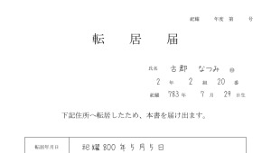 画像 1 | |||||||||||||||
| 53 | 2 | 2 | 祀耀800年 三月 一日 15:10 | 第70回元木桜祭りポスター | 呪殺編 | 85 | 0 | 四月病 | 古郡なつみ | 新村春花 | オブジェクト | 中央公園の掲示板に掲載されていた桜祭りの案内 | 備考 | 新村春花が古郡なつみにたこ焼きを渡す | 2 | 3500 | 画像 1 画像 2 | |||||||||||||||
| 19 | 3 | 3 | 祀耀790年 三月 一日 11:20 | 古郡なつみの卒園アルバム | 呪殺編 | 85 | 1 | 四月病 | 古郡なつみ | 古郡なつみ | オブジェクト | 中央公園へ春の遠足で行ったときの集合写真 | 備考 | 古郡なつみが自宅のトイレで嘔吐する | 1 | 2625 | 画像 1 画像 2 | |||||||||||||||
| 1 | 4 | 4 | 祀耀800年 四月 八日 06:59 | おはおは！ジャパン | 呪殺編 | 101 | 0 | 四月八日の朝 | 古郡なつみ | 不明 | シナリオ | 朝の情報番組『おはおは！ジャパン』の豆知識コーナー | 備考 | 古郡なつみがテレビを見る | 1383 | 2420 | 物リスト | 0 | 物リスト | 2 | 物リスト | 3 | 画像 1 画像 2 画像 3 画像 4 画像 5 画像 6 画像 7 画像 8 画像 9 画像 10 画像 11 画像 12 画像 13 画像 14 画像 15 画像 16 | |||||||||
| 2 | 5 | 5 | 祀耀800年 四月 三日 20:00 | 新型スマートフォン『イロカラ』 | 呪殺編 | 101 | 1 | 四月八日の朝 | 古郡なつみ | 古郡なつみ | オブジェクト | 古郡なつみが進級祝いで買ってもらったスマートフォンの説明書 | 備考 | 古郡なつみがスマートフォンを手に取る | 9 | 9625 | 画像 1 | |||||||||||||||
| 45 | 6 | 6 | 祀耀799年 八月 八日 09:00 | 映画レビューサイト | 呪殺編 | 101 | 2 | 四月八日の朝 | 古郡なつみ | 古郡なつみ | オブジェクト | 古郡なつみが購入した映画のレビュー | 備考 | 古郡なつみが購入したDVDを手に取る | 8 | 8750 | 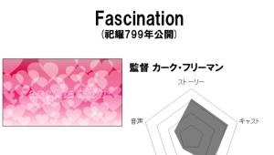 画像 1 | |||||||||||||||
| 65 | 7 | 7 | 祀耀800年 四月 七日 10:00 | 古郡なつみの生徒証 | 呪殺編 | 104 | 0 | 前兆 | 古郡なつみ | 古郡なつみ | オブジェクト | 古郡なつみの学生証 | 備考 | 古郡なつみが新村春花の自宅で眠りにつく | 回転 | 1 | 2625 | 画像 1 画像 2 画像 3 | ||||||||||||||
| 66 | 8 | 8 | 祀耀800年 四月 七日 10:10 | 新村春花の生徒証 | 呪殺編 | 104 | 1 | 前兆 | 古郡なつみ | 新村春花 | オブジェクト | 新村春花の学生証 | 備考 | 古郡なつみが新村春花の自宅で眠りにつく | 回転 | 1 | 2625 | 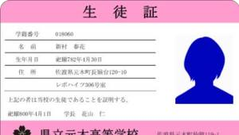 画像 1 画像 2 | ||||||||||||||
| 5 | 9 | 9 | 祀耀796年 九月三〇日 08:30 | 誕生日のお祝い | 呪殺編 | 306 | 0 | 野次馬 | 五島絵梨奈 | 五島絵梨奈 | シナリオ | 五島絵梨奈が小学生だった時、朝の会で催された誕生日のお祝い | 備考 | 五島絵梨奈が小学生時代の担任教師と再会する | 627 | 1750 | 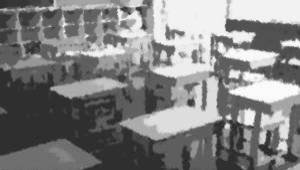 | |||||||||||||||
| 73 | 10 | 10 | 祀耀800年 四月 八日 11:40 | マスコミによるインタビュー | 呪殺編 | 113 | 0 | 好奇心 | 古郡なつみ | 不明 | シナリオ | 中央公園の事件を取材したテレビの映像 | 備考 | 古郡なつみと新村春花が高校掲示板を見る | 659 | 1750 | 出来事リスト | 2 | 画像 1 画像 2 | |||||||||||||
| 72 | 11 | 11 | 祀耀800年 四月 八日 10:40 | 五島絵梨奈のメモ① | 呪殺編 | 116 | 0 | 小さな探偵 | 古郡なつみ | 五島絵梨奈 | オブジェクト | 中央公園の事件を書きとめたメモ | 備考 | 五島絵梨奈が古郡なつみと新村春花の過去を聞く | 4 | 5250 | 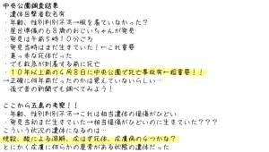 画像 1 | |||||||||||||||
| 6 | 12 | 12 | 祀耀796年一二月三一日 20:00 | 超常現象特集！～怪異！現れた妖花～ | 呪殺編 | 116 | 1 | 小さな探偵 | 古郡なつみ | 五島絵梨奈 | シナリオ | 年末特別番組で放送された怪奇現象特集 | 備考 | 五島絵梨奈が御神木の話をする | 846 | 1750 | 物リスト | 7 | ||||||||||||||
| 8 | 13 | 13 | 祀耀796年一二月三一日 19:00 | 超常現象特集！～テレパシーは実現するのか！？～ | 呪殺編 | 116 | 2 | 小さな探偵 | 古郡なつみ | 不明 | シナリオ | 年末特別番組で放送された超常現象バラエティ | 備考 | 古郡なつみが自分の直感について考察する | 1468 | 2569 | 物リスト | 7 | ||||||||||||||
| 301 | 14 | 14 | 祀耀800年 四月 八日 13:05 | 内緒の話 | 呪殺編 | 116 | 3 | 小さな探偵 | 古郡なつみ | 不明 | シナリオ | 新村春花と五島絵梨奈が古郡なつみのいない間に話したこと | 備考 | 古郡なつみがザッハのトイレに行く | 1469 | 2570 | ||||||||||||||||
| 76 | 15 | 15 | 祀耀800年 四月 八日 13:20 | 五島絵梨奈のメモ②' | 呪殺編 | 119 | 0 | 警告 | 古郡なつみ | 五島絵梨奈 | オブジェクト | 古郡なつみの夢の内容をメモしたもの | 備考 | 五島絵梨奈が古郡なつみの夢の話を聞き取る | 1 | 2625 | 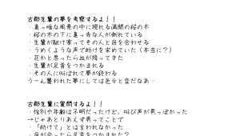 画像 1 | |||||||||||||||
| 70 | 16 | 16 | 祀耀800年 四月 八日 09:00 | 塾の案内 | 呪殺編 | 119 | 1 | 警告 | 古郡なつみ | 五島絵梨奈 | オブジェクト | 五島絵梨奈が通う四月八日の塾の開講について | 備考 | 五島絵梨奈が塾は休みだと言う | 3 | 4375 | 場所 | 6 | 画像 1 | |||||||||||||
| 75 | 17 | 17 | 祀耀800年 四月 八日 13:19 | 五島絵梨奈のメモ② | 呪殺編 | 129 | 0 | 76 | 小さくも大きな鼓動 | 五島絵梨奈 | 五島絵梨奈 | オブジェクト | 古郡なつみの夢の内容をメモしたもの（一部を消す前） | 備考 | 五島絵梨奈が古郡なつみに中央公園事件被害者を伝える | 0 | 1750 | 画像 1 | ||||||||||||||
| 9 | 18 | 18 | 祀耀800年 四月 八日 18:00 | 妙な気を起こさなければ…… | 呪殺編 | 154 | 0 | 決意 | 五島絵梨奈 | 伊勢大二郎 | シナリオ | 元木町事件の被害者家族を見た警察職員の会話 | 備考 | 伊勢大二郎が中央公園被害者遺族の話を聞く | 1015 | 1776 | ||||||||||||||||
| 91 | 19 | 19 | 祀耀800年 四月 九日 05:00 | 元木日報 | 呪殺編 | 157 | 0 | 監視 | 五島絵梨奈 | 不明 | オブジェクト | 元木町事件が発生した次の日の朝刊 | 備考 | 五島絵梨奈が何者かに撲殺される | 5 | 6125 | 新村美冬 | 1 | 1 | 物リスト | 8 | 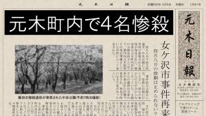 画像 1 画像 2 画像 3 画像 4 画像 5 画像 6 | ||||||||||
| 313 | 20 | 20 | 祀耀元年 七月 一日 20:00 | 翠眼の娘 | 呪殺編 | 157 | 1 | 監視 | 五島絵梨奈 | 不明 | 書簡 | 緑の目を持つ娘を探していた者の手記 | 備考 | 呪殺編第一ルートを終える | 0 | 0 | 1073 | 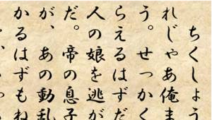 画像 1 画像 2 | ||||||||||||||
| 32 | 21 | 21 | 祀耀796年一二月 三日 16:30 | 五島桃子の履歴書 | 呪殺編 | 160 | 0 | 新村さん | 五島絵梨奈 | 五島桃子 | オブジェクト | 五島桃子がアルバイト先に提出した履歴書 | 備考 | 五島絵梨奈が自宅に到着する | 4 | 5250 | 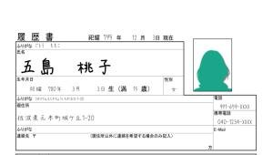 画像 1 | |||||||||||||||
| 48 | 22 | 22 | 祀耀799年一〇月 二日 10:10 | 同窓会の案内 | 呪殺編 | 160 | 1 | 新村さん | 五島絵梨奈 | 五島咲妃 | オブジェクト | 五島絵梨奈の母親、咲妃とその夫に送られてきた同窓会の案内はがき | 備考 | 五島絵梨奈が両親の無事を確認する | 回転 | 1 | 2625 | 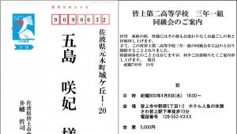 画像 1 画像 2 画像 3 画像 4 画像 5 画像 6 画像 7 画像 8 画像 9 画像 10 画像 11 画像 12 画像 13 画像 14 画像 15 画像 16 画像 17 画像 18 | ||||||||||||||
| 84 | 23 | 23 | 祀耀800年 四月 七日 21:15 | 盗難車情報 | 呪殺編 | 163 | 0 | 容疑者の悲鳴① | 五島絵梨奈 | 伊勢大二郎 | シナリオ | 警察署に届けられた盗難車情報 | 備考 | 五島絵梨奈が新村春花が犯人でない根拠を考察する | 363 | 1750 | 画像 1 | |||||||||||||||
| 51 | 24 | 24 | 祀耀800年 一月二九日 10:00 | 元木町の少年犯罪 | 呪殺編 | 168 | 0 | 容疑者の悲鳴② | 五島絵梨奈 | 伊勢大二郎 | シナリオ | 元木町の少年犯罪の傾向と対策 | 備考 | 五島絵梨奈が夜間コンビニ前で新村春花を発見する | 1113 | 1947 | 画像 1 | |||||||||||||||
| 232 | 25 | 25 | 祀耀798年 八月 九日 20:00 | 電話の相手 | 呪殺編 | 171 | 0 | 嘔吐 | 五島絵梨奈 | 五島絵梨奈 | シナリオ | 五島絵梨奈の姉である五島桃子の電話の声 | 備考 | 五島桃子が帰宅する | 353 | 1750 | 五島桃子 | 13 | ||||||||||||||
| 7 | 26 | 26 | 祀耀800年 四月 八日 12:15 | 五島絵梨奈のメモ③ | 呪殺編 | 171 | 1 | 嘔吐 | 古郡なつみ | 五島絵梨奈 | オブジェクト | 中央公園の事件を書きとめたメモ | 備考 | 五島絵梨奈が新村春花から呪いの話を聞く | 3 | 4375 | 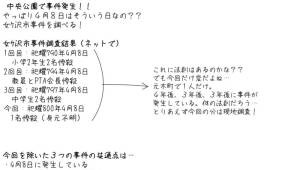 画像 1 | |||||||||||||||
| 23 | 27 | 27 | 祀耀790年 四月 九日 04:30 | 女ケ沢新聞① | 呪殺編 | 171 | 2 | 嘔吐 | 五島絵梨奈 | 不明 | オブジェクト | 飯沢県女ケ沢市で発生した児童惨殺事件の新聞記事 | 備考 | 五島絵梨奈が新村春花から呪いの話を聞く | 8 | 8750 | 出来事リスト | 10 | 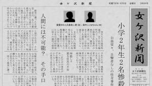 画像 1 画像 2 画像 3 画像 4 画像 5 画像 6 画像 7 画像 8 画像 9 | |||||||||||||
| 29 | 28 | 28 | 祀耀794年 四月 九日 04:30 | 女ケ沢新聞② | 呪殺編 | 173 | 0 | 証明 | 五島絵梨奈 | 不明 | オブジェクト | 飯沢県女ケ沢市で祀耀794年に発生した教職員とPTA役員が惨殺された事件 | 備考 | 五島絵梨奈が新村春花に葬儀の服装を確認する | 6 | 7000 | 出来事リスト | 11 | 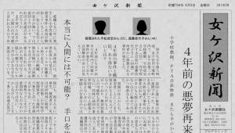 画像 1 画像 2 画像 3 画像 4 画像 5 画像 6 画像 7 | |||||||||||||
| 97 | 29 | 29 | 祀耀800年 五月三〇日 11:15 | 診断録音記録 | 呪殺編 | 177 | 0 | 放棄 | 五島絵梨奈 | 伊勢大二郎 | シナリオ | 元木町連続殺人事件で生き残った少女を心療内科医が診断したときの録音データ | 備考 | 五島絵梨奈が全ての思考を放棄する | 787 | 1750 | 画像 1 | |||||||||||||||
| 30 | 30 | 30 | 祀耀781年一一月二四日 08:00 | 供養 | 呪殺編 | 177 | 1 | 放棄 | 五島絵梨奈 | 不明 | シナリオ | 新村美冬が供養を受ける | 備考 | 五島絵梨奈が全ての思考を放棄する | 261 | 1750 | 新村美冬 | 24 | ||||||||||||||
| 314 | 31 | 31 | 祀耀718年 四月 一日 21:00 | 旅路の決意 | 呪殺編 | 177 | 2 | 放棄 | 五島絵梨奈 | 不明 | 書簡 | 悩みを持つ若者が旅立ちを決意する | 備考 | 呪殺編第二ルートを終える | 1 | 0 | 1039 | 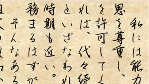 画像 1 画像 2 | ||||||||||||||
| 11 | 32 | 32 | 祀耀798年一〇月一一日 18:10 | 木曜は休み | 呪殺編 | 164 | 0 | 天才の焦燥 | 五島絵梨奈 | 古郡なつみ | シナリオ | 病院帰りの新村春花と出会った時の会話① | 備考 | 古郡なつみが五島絵梨奈の迎えを承諾する | 823 | 1750 | 新村春花 | 41 | ||||||||||||||
| 87 | 33 | 33 | 祀耀800年 四月 八日 20:00 | 古郡なつみの調書 | 呪殺編 | 169 | 0 | 感染 | 五島絵梨奈 | 伊勢大二郎 | シナリオ | 被害者の娘である古郡なつみから聴取した内容を記録した文書についての会話 | 備考 | 五島絵梨奈と古郡なつみが警察署を出る | 379 | 1750 | ||||||||||||||||
| 13 | 34 | 34 | 祀耀800年 四月 八日 19:30 | 新村栄一郎の死亡診断書 | 呪殺編 | 169 | 1 | 感染 | 古郡なつみ | 伊勢大二郎 | オブジェクト | 新村春花の父親である新村栄一郎の死亡診断の結果（コピー） | 備考 | 五島絵梨奈と古郡なつみが警察署を出る | 4 | 5250 | 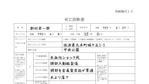 画像 1 | |||||||||||||||
| 36 | 35 | 35 | 祀耀797年 四月 九日 14:30 | 目撃者インタビュー | 呪殺編 | 169 | 2 | 感染 | 五島絵梨奈 | 新村春花 | シナリオ | 飯沢県女ケ沢市で発生した3度目の惨殺事件を目撃した人物を取材した映像 | 備考 | 古郡なつみと五島絵梨奈が何者かに襲われる | 938 | 1750 | 出来事リスト | 12 | ||||||||||||||
| 182 | 36 | 36 | 祀耀10年 四月 一日 21:00 | やんごとなき者の首 | 呪殺編 | 169 | 3 | 190 | 感染 | 五島絵梨奈 | 不明 | 書簡 | 関東に左遷された者が高貴な者を討ち取った時の手記 | 備考 | 呪殺編第三ルートを終える | 2 | 1111 | 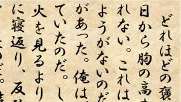 画像 1 画像 2 | ||||||||||||||
| 12 | 37 | 37 | 祀耀790年 四月 八日 13:00 | お姉ちゃん、どこ？ | 呪殺編 | 131 | 0 | 元木美少女同好会 | 五島絵梨奈 | 五島絵梨奈 | シナリオ | 五島絵梨奈の幼少期の思い出 | 備考 | 五島絵梨奈が中央公園で休む | 1152 | 2016 | 場所 | 54 | ||||||||||||||
| 35 | 38 | 38 | 祀耀798年 四月 三日 09:15 | 伊勢大二郎の警察手帳 | 呪殺編 | 131 | 1 | 元木美少女同好会 | 五島絵梨奈 | 伊勢大二郎 | オブジェクト | 伊勢大二郎の警察手帳 | 備考 | 伊勢大二郎が五島絵梨奈に警察手帳を見せる | 3 | 4375 | 画像 1 画像 2 画像 3 | |||||||||||||||
| 78 | 39 | 39 | 祀耀800年 四月 八日 15:10 | 不審者情報 | 呪殺編 | 137 | 0 | 警察官の顔 | 五島絵梨奈 | 不明 | シナリオ | SNSサイトに投稿された不審者の情報 | 備考 | 伊勢大二郎がザッハで大声を上げる | 305 | 1750 | 物リスト | 2 | ||||||||||||||
| 79 | 40 | 40 | 祀耀800年 四月 八日 15:30 | ハヤブサ宅配サービスの通話記録 | 呪殺編 | 140 | 0 | 混乱 | 五島絵梨奈 | 不明 | シナリオ | サービルコールセンター職員と新村春花の会話 | 備考 | 新村春花が荷物を宅配業者に預ける | 297 | 1750 | 場所 | 15 | ||||||||||||||
| 34 | 41 | 41 | 祀耀797年 三月一六日 05:30 | 元木駅時刻表 | 呪殺編 | 141 | 0 | 能面 | 古郡なつみ | 不明 | オブジェクト | 元木駅から桜岡方面へ向かう電車のダイヤ | 備考 | 古郡なつみと新村春花が電車に乗る | 回転 | 0 | 1750 | 場所 | 55 | 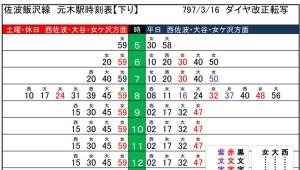 画像 1 画像 2 画像 3 画像 4 画像 5 画像 6 画像 7 画像 8 画像 9 画像 10 画像 11 画像 12 画像 13 画像 14 画像 15 画像 16 画像 17 画像 18 | ||||||||||||
| 14 | 42 | 42 | 祀耀798年一〇月一二日 16:10 | 病院帰り | 呪殺編 | 141 | 1 | 11 | 能面 | 古郡なつみ | 古郡なつみ | シナリオ | 病院帰りの新村春花と出会った時の会話② | 備考 | 古郡なつみが新村春花に自身の護衛を依頼する | 216 | 1750 | |||||||||||||||
| 83 | 43 | 43 | 祀耀800年 四月 八日 19:00 | 五島絵梨奈のメモ④ | 呪殺編 | 153 | 0 | 山の果て | 古郡なつみ | 五島絵梨奈 | オブジェクト | 伊勢大二郎から聞き取った情報と考察のメモ | 備考 | 古郡なつみと新村春花が桜岡駅に到着する | 3 | 4375 | 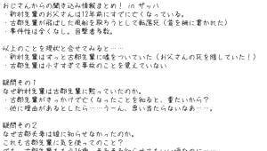 画像 1 | |||||||||||||||
| 15 | 44 | 44 | 祀耀800年 四月 九日 21:00 | 五島絵梨奈のメモ⑤ | 呪殺編 | 172 | 0 | 私にできること | 五島絵梨奈 | 五島絵梨奈 | オブジェクト | 古郡なつみと新村春花殺害を受けての考察メモ | 備考 | 五島絵梨奈が古郡茜に自首を勧告する | 4 | 5250 | 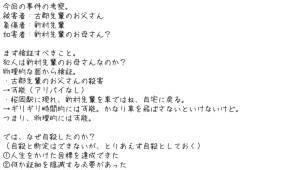 画像 1 | |||||||||||||||
| 4 | 45 | 45 | 祀耀800年 四月二〇日 21:00 | 被害者所持品の調査報告書 | 呪殺編 | 172 | 1 | 私にできること | 五島絵梨奈 | 伊勢大二郎 | オブジェクト | 新村春花の所持品調査結果 | 備考 | 『私にできること』エンドを迎える | 8 | 8750 | 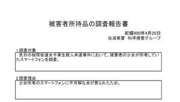 画像 1 | |||||||||||||||
| 10 | 46 | 46 | 祀耀310年 八月 一日 10:00 | 鬼神の群れ | 呪殺編 | 172 | 2 | 191 | 私にできること | 五島絵梨奈 | 不明 | 書簡 | とある武将が記述した鬼神のごとき兵たちについて | 備考 | 呪殺編第四ルートを終える | 3 | 0 | 2015 | 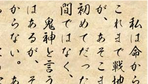 画像 1 画像 2 | |||||||||||||
| 71 | 47 | 47 | 祀耀800年 四月 八日 10:30 | 古郡良治の死亡診断書 | 呪殺編 | 143 | 0 | 再会 | 古郡なつみ | 伊勢大二郎 | オブジェクト | 皮を剥がされた後、カラスによって大動脈を裂傷して失血死 | 備考 | 古郡なつみが古郡良治の遺体と対面する | 3 | 4375 | 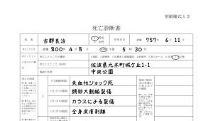 画像 1 | |||||||||||||||
| 20 | 48 | 48 | 祀耀798年一〇月一二日 19:00 | 心配だなあ……① | 呪殺編 | 143 | 1 | 14 | 再会 | 古郡なつみ | 古郡なつみ | シナリオ | 病院帰りの新村春花と出会った後、古郡茜と交わした会話 | 備考 | 新村春花が伊勢大二郎に怒りを覚える | 507 | 1750 | |||||||||||||||
| 17 | 49 | 49 | 祀耀790年一二月一九日 23:00 | 学生時代の手紙 | 呪殺編 | 149 | 0 | 犯人像 | 古郡なつみ | 伊勢大二郎 | オブジェクト | 伊勢大二郎が学生時代に交際していた女性からの手紙 | 備考 | 新村春花が伊勢大二郎の趣味に失望する | 7 | 7875 | 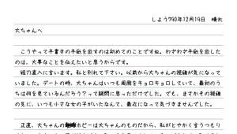 画像 1 | |||||||||||||||
| 18 | 50 | 50 | 祀耀800年 四月 八日 18:30 | ホシとマルタイ | 呪殺編 | 149 | 1 | 犯人像 | 古郡なつみ | 伊勢大二郎 | シナリオ | 被害者遺族である古郡家への対応について | 備考 | 伊勢大二郎が古郡なつみたちの前から去る | 475 | 1750 | ||||||||||||||||
| 22 | 51 | 51 | 祀耀800年 四月 八日 23:40 | 緊急連絡 | 呪殺編 | 151 | 0 | 失踪 | 古郡なつみ | 五島桃子 | シナリオ | 警察からかかってきた電話 | 備考 | 新村春花が失踪する | 1278 | 2236 | 五島桃子 | 2 | ||||||||||||||
| 189 | 52 | 52 | 祀耀800年 四月 八日 22:30 | 古郡良治の手紙 | 呪殺編 | 204 | 0 | 葛藤 | 古郡なつみ | 五島絵梨奈 | オブジェクト | 古郡良治が残した手紙 | 備考 | 五島絵梨奈が古郡茜に対して遠まわしに怒りをぶつける | 1310 | 8 | 8750 | 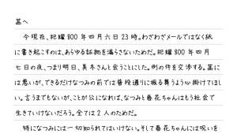 画像 1 | ||||||||||||||
| 16 | 53 | 53 | 祀耀310年 四月二〇日 23:00 | 儀之助の日記① | 呪殺編 | 204 | 1 | 127 | 葛藤 | 五島絵梨奈 | 不明 | 書簡 | かなり古い日記。戦国時代のもののようである。 | 備考 | 呪殺編第五ルートを終える | 4 | 0 | 1176 | 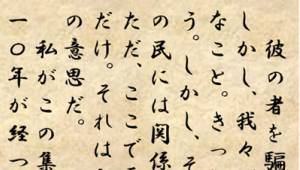 画像 1 画像 2 | |||||||||||||
| 55 | 54 | 54 | 祀耀800年 三月一六日 14:15 | 教えて新村さん！ | 呪殺編 | 122 | 0 | お父さんの話 | 古郡なつみ | 新村春花 | シナリオ | 勉強を教えてもらうクラスメイトとの会話 | 備考 | 古郡なつみと新村春花が父親の話をする | 775 | 1750 | 新村春花 | 42 | ||||||||||||||
| 44 | 55 | 55 | 祀耀799年 八月 四日 10:10 | I am a bird! | 呪殺編 | 127 | 0 | ごめんね。 | 古郡なつみ | 新村春花 | シナリオ | 海外の有名動画投稿者がアップした超炭酸ボンバーのレビュー | 備考 | 新村春花が古郡なつみのいたずらに引っかかる | 1182 | 2068 | 物リスト | 10 | ||||||||||||||
| 37 | 56 | 56 | 祀耀800年 四月 八日 15:00 | 犯行現場 | 呪殺編 | 138 | 0 | 逃避行 | 古郡なつみ | 伊勢大二郎 | シナリオ | 道端に放置されたワゴン車の捜査 | 備考 | 古郡なつみと新村春花が五島絵梨奈と合流する | 504 | 1750 | ||||||||||||||||
| 38 | 57 | 57 | 祀耀800年 四月 八日 16:30 | お気を付けて。 | 呪殺編 | 147 | 0 | 乙女の聖戦～抵抗～ | 古郡なつみ | 伊勢大二郎 | シナリオ | 伊勢大二郎が古郡茜に五島家の現状を報告 | 備考 | 古郡なつみと新村春花が五島家で入浴する | 1024 | 1792 | ||||||||||||||||
| 24 | 58 | 58 | 祀耀798年一〇月一三日 10:00 | 心配だなあ……② | 呪殺編 | 147 | 1 | 20 | 乙女の聖戦～抵抗～ | 古郡なつみ | 古郡なつみ | シナリオ | 新村春花の母親である美冬との会話 | 備考 | 五島絵梨奈が新村春花のスタイルを絶賛する | 997 | 1750 | |||||||||||||||
| 52 | 59 | 59 | 祀耀800年 四月 八日 17:40 | 桜寿司 | 呪殺編 | 205 | 0 | 乙女の聖戦～修羅～ | 古郡なつみ | 五島絵梨奈 | オブジェクト | 元木町の名店桜寿司の紹介ページ | 備考 | 古郡なつみが新村春花と五島絵梨奈に仕返しを画策する | 動画 | 4 | 5250 | 場所 | 16 | 画像 1 画像 2 画像 3 画像 4 画像 5 画像 6 | ||||||||||||
| 312 | 60 | 60 | 祀耀800年 四月 八日 20:00 | 近づけない | 呪殺編 | 162 | 0 | 新しい世界 | 古郡なつみ | 五島絵梨奈 | シナリオ | 五島絵梨奈が古郡なつみたちを泊める話をする | 備考 | 五島桃子が外出する | 468 | 1750 | ||||||||||||||||
| 25 | 61 | 61 | 祀耀797年 八月 一日 19:00 | 火事場の馬鹿力 | 呪殺編 | 162 | 1 | 新しい世界 | 五島絵梨奈 | 五島絵梨奈 | シナリオ | 古郡なつみをサポートするために調べものをしていた際に行きあたったサイト | 備考 | 五島絵梨奈が古郡なつみのサポートを願い出る | 752 | 1750 | 物リスト | 12 | ||||||||||||||
| 26 | 62 | 62 | 祀耀798年 四月 九日 19:00 | バレー部監督の評価 | 呪殺編 | 162 | 2 | 新しい世界 | 五島絵梨奈 | 五島絵梨奈 | シナリオ | 古郡なつみに対するバレー部監督の評価 | 備考 | 古郡なつみがレギュラー選考で落選する | 1434 | 2509 | ||||||||||||||||
| 40 | 63 | 63 | 祀耀798年 七月二三日 20:00 | 祀耀798年度中学総合体育大会結果 | 呪殺編 | 162 | 3 | 新しい世界 | 五島絵梨奈 | 五島絵梨奈 | オブジェクト | 佐波県内で行われた中学女子バレーの大会結果 | 備考 | 古郡なつみがレギュラー選考で落選する | 2 | 3500 | 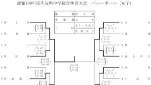 画像 1 | |||||||||||||||
| 85 | 64 | 64 | 祀耀800年 四月 八日 19:40 | 五島絵梨奈のメモ⑥ | 呪殺編 | 170 | 0 | 信じていた | 古郡なつみ | 五島絵梨奈 | オブジェクト | 伊勢大二郎が訪ねてきた件での五島絵梨奈の考察 | 備考 | 五島絵梨奈が盗聴器を落とす | 4 | 5250 | 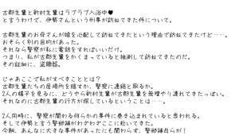 画像 1 | |||||||||||||||
| 39 | 65 | 65 | 祀耀800年 四月 八日 20:30 | 音信不通 | 呪殺編 | 170 | 1 | 信じていた | 古郡なつみ | 伊勢大二郎 | シナリオ | 音信不通になった部隊について | 備考 | 古郡なつみが何者かに呼ばれる | 261 | 1750 | ||||||||||||||||
| 46 | 66 | 66 | 祀耀796年一二月三一日 21:00 | 超常現象特集！～終焉を告げるラッパ～ | 呪殺編 | 206 | 0 | やっぱり、ごめんね。 | 古郡なつみ | 五島絵梨奈 | シナリオ | 年末特別番組で放送された怪奇現象特集 | 備考 | 古郡なつみが中央公園で赤い人と対面する | 1237 | 2164 | 物リスト | 71 | ||||||||||||||
| 27 | 67 | 67 | 祀耀800年 四月一〇日 16:30 | 新村栄一郎の死亡診断書 追加依頼分 | 呪殺編 | 202 | 0 | 13 | 春花と魔女と死神 | 古郡なつみ | 伊勢大二郎 | オブジェクト | 新村栄一郎の検死追加情報 | 備考 | 『春花と魔女と死神』エンドを迎える | 7 | 7875 | 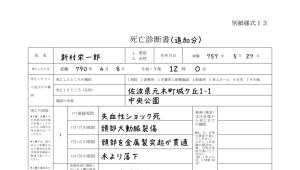 画像 1 | ||||||||||||||
| 68 | 68 | 68 | 祀耀311年 四月 一日 22:00 | 妖魔の声、聞こゆ者たち | 呪殺編 | 202 | 1 | 128 | 春花と魔女と死神 | 古郡なつみ | 不明 | 書簡 | 最近、家臣の中に妖魔の声を聞くものがいるとの書簡 | 備考 | 呪殺編を終える | 5 | 0 | 1440 | 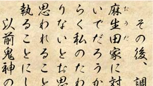 画像 1 画像 2 | |||||||||||||
| 209 | 69 | 69 | 祀耀342年 六月 一日 22:00 | 薬の使用制限 | 呪殺編 | 202 | 2 | 138 | 春花と魔女と死神 | 古郡なつみ | 不明 | 書簡 | 掟で禁止すべきものについて書かれているようである | 備考 | 呪殺編を終える | 6 | 721 | 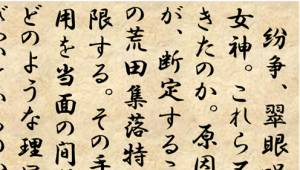 画像 1 画像 2 | ||||||||||||||
| 47 | 70 | 70 | 祀耀800年 四月 七日 06:50 | 電撃雷訪♪ゆきぴん | 明徴編 | 84 | 0 | 1 | 四月病の友人 | 新村春花 | 不明 | シナリオ | おはおは！ジャパンの取材コーナー | 備考 | 新村春花と五島絵梨奈が桜祭りに参加する | 1630 | 3260 | 画像 1 画像 2 画像 3 画像 4 画像 5 画像 6 画像 7 画像 8 画像 9 画像 10 画像 11 画像 12 画像 13 画像 14 | ||||||||||||||
| 49 | 71 | 71 | 祀耀800年 四月 七日 09:10 | 内科診断 | 明徴編 | 84 | 1 | 四月病の友人 | 新村春花 | 新村春花 | シナリオ | 新村春花が食あたりで通院したときの会話 | 備考 | 新村春花が古郡なつみに手土産を持っていく | 902 | 2000 | ||||||||||||||||
| 50 | 72 | 72 | 祀耀788年 五月 一日 16:10 | 新村美冬の診断書 | 明徴編 | 87 | 0 | 魔女が生まれた日 | 新村春花 | 新村美冬 | オブジェクト | 新村美冬が心療内科を受診した際に出された診断書 | 備考 | 新村春花が女ケ沢市での生活を振り返る | 3 | 5000 | 新村美冬 | 20 | 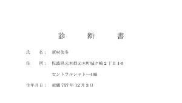 画像 1 | |||||||||||||
| 54 | 73 | 73 | 祀耀789年一一月一七日 16:00 | 1年1組の学級報告 | 明徴編 | 87 | 1 | 魔女が生まれた日 | 新村春花 | 佐々木翠 | オブジェクト | 当時新村春花の担任だった佐々木翠が提出した報告書 | 備考 | 新村春花が女ケ沢市での生活を振り返る | 4 | 6000 | 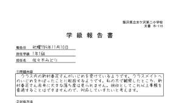 画像 1 | |||||||||||||||
| 221 | 74 | 74 | 祀耀790年 四月一〇日 13:00 | 犯人は私です！ | 明徴編 | 87 | 2 | 魔女が生まれた日 | 新村春花 | 不明 | シナリオ | 警察による女ケ沢市事件の聞き込み調査 | 備考 | 新村春花が女ケ沢市での生活を振り返る | 992 | 2000 | 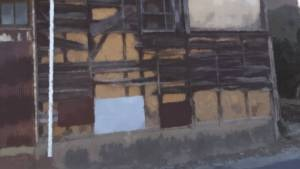 | |||||||||||||||
| 56 | 75 | 75 | 祀耀800年 三月二六日 17:00 | 谷崎玲の噂 | 明徴編 | 102 | 0 | 紙人形 | 新村春花 | 新村春花 | シナリオ | 新村春花が2人のクラスメイトと交わした会話 | 備考 | 新村春花が担任の谷崎玲からのメールを見る | 1730 | 3460 | ||||||||||||||||
| 59 | 76 | 76 | 祀耀800年 四月 八日 12:20 | 五島絵梨奈のメモ⑦ | 明徴編 | 117 | 0 | あきらめましょう | 新村春花 | 五島絵梨奈 | オブジェクト | 五島絵梨奈が新村家到着前に書いたメモ | 備考 | 古郡なつみが1人で買い物に出かける | 6 | 8000 | 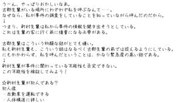 画像 1 | |||||||||||||||
| 60 | 77 | 77 | 祀耀800年 四月 八日 12:20 | おつかいおつかい！ | 明徴編 | 117 | 1 | あきらめましょう | 新村春花 | 古郡なつみ | シナリオ | 古郡なつみがおつかいに行ったときに考えたこと | 備考 | 新村春花が五島絵梨奈への相談を終える | 907 | 2000 | ||||||||||||||||
| 57 | 78 | 78 | 祀耀800年 四月 一日 00:00 | 下世話な書き込み | 明徴編 | 120 | 0 | 生き残るのは一人 | 新村春花 | 新村春花 | シナリオ | ある日の高校掲示板の書き込み | 備考 | 新村春花がロシアンたこ焼きの戦いに巻き込まれる | 2104 | 4208 | ||||||||||||||||
| 58 | 79 | 79 | 祀耀799年 九月一五日 16:00 | デンジャラス・フード | 明徴編 | 125 | 0 | 44 | 乙女の聖戦～鬼才～ | 新村春花 | 古郡なつみ | シナリオ | 日本のデンジャラス・フードを扱った動画 | 備考 | 新村春花がロシアンたこ焼きの戦いに勝利する | 2681 | 5362 | |||||||||||||||
| 61 | 80 | 80 | 祀耀800年 四月 八日 14:00 | 五島絵梨奈のメモ⑧ | 明徴編 | 128 | 0 | アリバイ | 新村春花 | 五島絵梨奈 | オブジェクト | 五島絵梨奈が女ケ沢市事件のアリバイについて書いたメモ | 備考 | 新村春花が呪いの存在を否定し始める | 5 | 7000 | 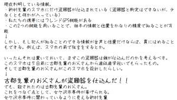 画像 1 | |||||||||||||||
| 62 | 81 | 81 | 祀耀800年 四月 八日 14:30 | 五島絵梨奈のメモ⑨ | 明徴編 | 132 | 0 | 予定外の殺人 | 新村春花 | 五島絵梨奈 | オブジェクト | 五島絵梨奈が元木町事件の不可解な点について書いたメモ | 備考 | 新村春花が本当のターゲットである可能性が浮上する | 4 | 6000 | 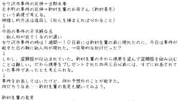 画像 1 | |||||||||||||||
| 63 | 82 | 82 | 祀耀800年 三月 九日 20:00 | 三者面談 | 明徴編 | 132 | 1 | 予定外の殺人 | 新村春花 | 新村春花 | シナリオ | 新村春花、新村美冬、担任教師の谷崎玲との会話 | 備考 | 新村春花が本当のターゲットである可能性が浮上する | 1616 | 3232 | 新村美冬 | 21 | 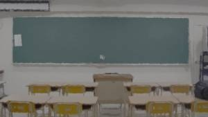 | |||||||||||||
| 64 | 83 | 83 | 祀耀790年 三月二九日 14:00 | 掟 | 明徴編 | 134 | 0 | 荒田集落 | 新村春花 | 新村美冬 | シナリオ | 新村美冬がある人物に対し、殺人依頼をしている | 備考 | 五島絵梨奈が荒田集落の存在を危険視する | 547 | 2000 | 新村美冬 | 25 | ||||||||||||||
| 222 | 84 | 84 | 祀耀800年 四月 八日 15:30 | 私、目撃者です！ | 明徴編 | 148 | 0 | 長 | 新村春花 | 五島絵梨奈 | シナリオ | 警察署に駆け込んだ五島絵梨奈の訴え | 備考 | 新村美冬が無傷で逮捕される | 539 | 2000 | ||||||||||||||||
| 67 | 85 | 85 | 祀耀800年 四月一三日 10:00 | 伊勢大二郎の始末書 | 明徴編 | 148 | 1 | 長 | 新村春花 | 伊勢大二郎 | オブジェクト | 伊勢大二郎が書いた始末書 | 備考 | 新村美冬が無傷で逮捕される | 4 | 6000 | 伊勢大二郎 | 5 | 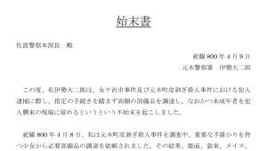 画像 1 | |||||||||||||
| 223 | 86 | 86 | 祀耀800年 五月 五日 18:00 | 事故？ 殺人？ | 明徴編 | 207 | 0 | 残された謎 | 新村春花 | 五島絵梨奈 | シナリオ | 五島桃子が新村栄一郎死亡事故の話をする | 備考 | 古郡なつみ、新村春花、五島絵梨奈の3人で休日を過ごす | 748 | 2000 | 五島桃子 | 12 | ||||||||||||||
| 69 | 87 | 87 | 祀耀510年 四月二〇日 23:00 | 妖花之図 | 明徴編 | 195 | 0 | 1 | 過去へ馳せる夢 | 新村春花 | 不明 | オブジェクト | 古い図画のようである | 備考 | 新村春花がドアの隙間からあり得ない光景を見る | 回転 | 3 | 5000 | 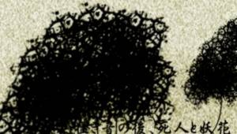 画像 1 画像 2 画像 3 画像 4 画像 5 画像 6 画像 7 画像 8 画像 9 画像 10 画像 11 画像 12 画像 13 画像 14 画像 15 画像 16 画像 17 画像 18 | |||||||||||||
| 74 | 88 | 88 | 祀耀796年一二月三一日 23:00 | 超常現象特集！～ゾンビの正体とは？～ | 明徴編 | 195 | 1 | 1 | 過去へ馳せる夢 | 新村春花 | 五島絵梨奈 | シナリオ | 年末特別番組で放送された怪奇現象特集 | 備考 | 新村春花が居住する地域一帯に怪音が鳴り響く | 1362 | 2724 | 物リスト | 7 | |||||||||||||
| 286 | 89 | 89 | 祀耀343年 四月 八日 13:00 | 荒田を去る者たち | 明徴編 | 195 | 2 | 139 | 1 | 過去へ馳せる夢 | 新村春花 | 不明 | 書簡 | ある理由で荒田集落から去ることになった者の手記 | 備考 | 明徴編第一ルートを終える | 7 | 791 | 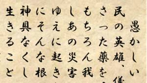 画像 1 画像 2 | |||||||||||||
| 77 | 90 | 90 | 祀耀757年一二月 三日 15:00 | 外崎津花の日記 | 詫言編 | 13 | 0 | 親友、そして家族 | 新村美冬 | 外崎津花 | オブジェクト | 古郡茜の母親である外崎津花（とのさきつばな）が書いた日記 | 備考 | 幼少期の新村美冬と古郡茜が元木町で生きていくと約束する | 593 | 1 | 3000 | 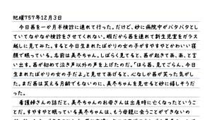 画像 1 | ||||||||||||||
| 80 | 91 | 91 | 祀耀773年 五月 八日 15:00 | 前世の罪 | 詫言編 | 13 | 1 | 親友、そして家族 | 新村美冬 | 新村美冬 | シナリオ | 新村美冬の父親の葬儀 | 備考 | 新村美冬が高校生になる | 924 | 2000 | ||||||||||||||||
| 81 | 92 | 92 | 祀耀778年一一月二二日 01:10 | カンニングペーパー | 詫言編 | 208 | 0 | 鏡(あなた) | 新村美冬 | 古郡茜 | オブジェクト | 古郡茜が新村美冬のために書いたメモ | 備考 | 古郡茜が新村春花にカンニングペーパーを手渡す | 593 | 5 | 7000 | 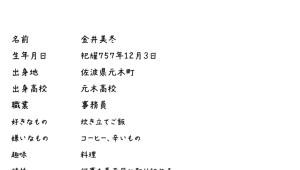 画像 1 | ||||||||||||||
| 224 | 93 | 93 | 祀耀773年 三月二五日 08:00 | 寂しい見送り | 詫言編 | 208 | 1 | 鏡(あなた) | 新村美冬 | 新村栄一郎 | シナリオ | 荒田集落を出ていく新村栄一郎 | 備考 | 新村栄一郎が新村美冬の前から去る | 208 | 2000 | ||||||||||||||||
| 82 | 94 | 94 | 祀耀778年一一月二三日 17:30 | 珍しいお客様 | 詫言編 | 209 | 0 | 鏡(わたし) | 新村美冬 | 不明 | シナリオ | プリマベラの店員同士の話 | 備考 | 新村美冬と新村栄一郎がプリマベラから退店する | 884 | 2000 | ||||||||||||||||
| 239 | 95 | 95 | 祀耀778年一二月一〇日 10:00 | 山籠目録 | 詫言編 | 210 | 0 | 夢 | 新村美冬 | 新村美冬 | オブジェクト | 荒田集落の嫁入り試験『山籠(さんろう)』の決まりごと | 備考 | 新村美冬が荒田集落の試験を受ける | 10 | 12000 | 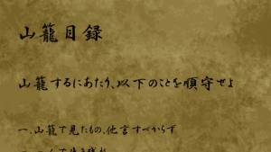 画像 1 | |||||||||||||||
| 88 | 96 | 96 | 祀耀781年 八月二一日 13:30 | 心からのサービス | 詫言編 | 210 | 1 | 夢 | 新村美冬 | 不明 | シナリオ | プリマベラの店員同士の話 | 備考 | 新村美冬と古郡茜がプリマベラのサービスを受ける | 809 | 2000 | ||||||||||||||||
| 225 | 97 | 97 | 祀耀781年一一月二四日 16:00 | 幸せの切り口 | 詫言編 | 14 | 0 | 新しい家族たち | 新村美冬 | 古郡茜 | シナリオ | 新村美冬の死産を知った古郡茜 | 備考 | 古郡茜が新村美冬に養子の提案をする | 1675 | 3350 | ||||||||||||||||
| 89 | 98 | 98 | 祀耀788年 四月 八日 13:20 | 事故の目撃者 | 詫言編 | 15 | 0 | 223 | ひび | 古郡良治 | 五島桃子 | シナリオ | 事故を目撃した子供たちとその母親の会話 | 備考 | 新村栄一郎が死亡する | 346 | 2000 | 五島絵梨奈 | 25 | 五島桃子 | 7 | |||||||||||
| 90 | 99 | 99 | 祀耀790年 四月 六日 17:30 | 事故顛末書 | 詫言編 | 25 | 0 | 二年後 | 古郡良治 | 古郡良治 | オブジェクト | 古郡良治が勤務する会社の社員が起こした事故の顛末書 | 備考 | 古郡良治が社用車の事故を目撃する | 7 | 9000 | 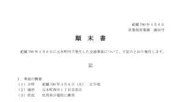 画像 1 | |||||||||||||||
| 93 | 100 | 100 | 祀耀790年 三月 一日 18:30 | ファミリーレストランオープンのお知らせ | 詫言編 | 27 | 0 | 乙女の聖戦～義務～ | 古郡良治 | 古郡良治 | オブジェクト | ザッハ35号店オープンを知らせるチラシ | 備考 | 古郡良治と古郡なつみがザッハへ向かう | 7 | 9000 | 画像 1 | |||||||||||||||
| 92 | 101 | 101 | 祀耀790年 四月一〇日 11:30 | よくかけたおともだちのえ | 詫言編 | 27 | 1 | 乙女の聖戦～義務～ | 古郡良治 | 五島絵梨奈 | オブジェクト | 保育園のお絵かきの時間、最近の楽しかったことを描いた絵 | 備考 | ロシアンたこ焼きの戦いに決着がつく | 3 | 5000 | 画像 1 画像 2 | |||||||||||||||
| 3 | 102 | 102 | 祀耀789年 二月二四日 16:00 | 賃貸物件紹介 | 詫言編 | 29 | 0 | 凍える親子 | 古郡良治 | 新村美冬 | オブジェクト | 新村美冬、春花が居住するアパートの案内票 | 備考 | 古郡良治が新村美冬たちの居場所を知る | 3 | 5000 | 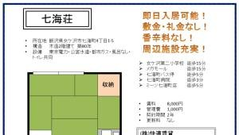 画像 1 | |||||||||||||||
| 226 | 103 | 103 | 祀耀780年 八月一五日 13:00 | もう、やめよう…… | 詫言編 | 31 | 0 | 私が望んだ勇気 | 古郡良治 | 新村美冬 | シナリオ | パチンコ店から出てきた古郡茜を発見する | 備考 | 古郡良治が古郡なつみの賭博気質の理由を知る | 1268 | 2536 | ||||||||||||||||
| 21 | 104 | 104 | 祀耀790年 四月 八日 16:00 | 義母の小言 | 詫言編 | 31 | 1 | 私が望んだ勇気 | 古郡良治 | 新村美冬 | シナリオ | 新村美冬と新村栄一郎の母親の会話 | 備考 | 古郡なつみが古郡良治に危険予知らしき発言をする | 1097 | 2194 | 新村美冬 | 22 | ||||||||||||||
| 42 | 105 | 105 | 祀耀790年 三月一二日 15:00 | まほうとまじゅつのせかい | 詫言編 | 32 | 0 | 逆撫で | 古郡良治 | 新村春花 | オブジェクト | 魔術について書かれた児童書 | 備考 | 新村美冬が女ケ沢市事件の計画を告白する | 5 | 7000 | 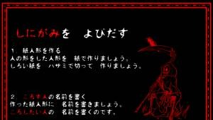 画像 1 | |||||||||||||||
| 28 | 106 | 106 | 祀耀790年 四月一〇日 05:00 | 女ケ沢新聞③ | 詫言編 | 32 | 1 | 逆撫で | 古郡良治 | 不明 | オブジェクト | 女ケ沢市七海町の火事を報道した朝刊 | 備考 | 古郡なつみのみ、生存する | 7 | 9000 | 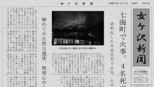 画像 1 画像 2 画像 3 画像 4 画像 5 画像 6 画像 7 画像 8 | |||||||||||||||
| 287 | 107 | 107 | 祀耀107年一〇月二〇日 20:00 | 戦いの装 | 詫言編 | 32 | 2 | 154 | 逆撫で | 古郡良治 | 不明 | 書簡 | 戦いの備えについて | 備考 | 詫言編第一ルートを終える | 8 | 897 | 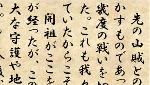 画像 1 画像 2 | ||||||||||||||
| 158 | 108 | 108 | 祀耀343年 七月 一日 20:00 | 湖のほとりの桜 | 詫言編 | 34 | 0 | 156 | 見送り | 古郡良治 | 不明 | 書簡 | 荒田集落を去った者が見つけた新しい場所 | 備考 | 詫言編を終える | 9 | 0 | 927 | 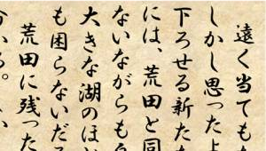 画像 1 画像 2 | |||||||||||||
| 227 | 109 | 109 | 祀耀790年 四月 七日 20:40 | 無口な孫 | 詫言編 | 29 | 0 | 1 | 凍える親子 | 古郡良治 | 外崎津花 | シナリオ | 外崎家に預けられた古郡なつみ | 備考 | 古郡良治が古郡なつみを外崎家に預ける | 348 | 2000 | |||||||||||||||
| 296 | 110 | 110 | 祀耀790年 四月 八日 16:30 | 本当にやったのか？ | 詫言編 | 237 | 0 | 変 | 古郡良治 | 古郡良治 | シナリオ | 女ケ沢市事件発生後の七海荘での共同トイレでの会話 | 備考 | 第一女ケ沢市事件が発生する | 522 | 2000 | ||||||||||||||||
| 86 | 111 | 111 | 祀耀668年 六月一四日 23:00 | 時代の流れ | 明徴編 | 88 | 0 | 162 | 真っ赤な×× | 新村美冬 | 不明 | 書簡 | 日本の近代化が見込まれる中、荒田集落が対応すべきことを書き記した書簡 | 備考 | 明徴編を終える | 10 | 0 | 827 | 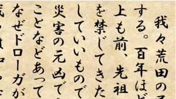 画像 1 画像 2 | |||||||||||||
| 31 | 112 | 112 | 祀耀678年 五月 一日 19:00 | 若者の恋文 | 明徴編 | 88 | 1 | 163 | 真っ赤な×× | 新村美冬 | 不明 | 書簡 | 叶わぬ恋と知り、思い人へつづった手紙 | 備考 | 明徴編を終える | 11 | 0 | 1145 | 画像 1 画像 2 | |||||||||||||
| 94 | 113 | 113 | 祀耀800年 四月 六日 20:30 | 現役女教師の、生々しいブログ | 死月編 | 78 | 0 | 新入生代表挨拶 | 古郡なつみ | 谷崎玲 | オブジェクト | 五島絵梨奈の担任、田澤洋子が書いたブログ | 備考 | 五島絵梨奈が新入生代表のあいさつをする | 9 | 13750 | 画像 1 | |||||||||||||||
| 96 | 114 | 114 | 祀耀800年 四月 七日 11:20 | 手土産のレシート | 死月編 | 82 | 0 | 春花の故郷 | 古郡なつみ | 古郡茜 | オブジェクト | 手土産を買った時のレシート | 備考 | 古郡なつみが荒田集落への手土産を預かる | 3 | 6250 | 画像 1 | |||||||||||||||
| 98 | 115 | 115 | 祀耀790年 四月 二日 14:30 | 飯沢県まるごとガイドブック | 死月編 | 83 | 0 | 今は楽しいことだけを。 | 古郡なつみ | 古郡なつみ | オブジェクト | 飯沢県の観光ガイドブック | 備考 | 古郡なつみが五島絵梨奈に持ち物を見破られる | 5 | 8750 | 画像 1 画像 2 画像 3 画像 4 画像 5 画像 6 | |||||||||||||||
| 99 | 116 | 116 | 祀耀800年 四月 二日 14:30 | 夜桜にあうものは？ | 死月編 | 83 | 1 | 今は楽しいことだけを。 | 古郡なつみ | 新村春花 | シナリオ | 咲き始めた桜を見たときの会話 | 備考 | 五島絵梨奈が新村春花に持ち物を見破られる | 821 | 2500 | ||||||||||||||||
| 100 | 117 | 117 | 祀耀798年 五月 七日 16:00 | 新村茅萱の履歴書 | 死月編 | 89 | 0 | かりそめの可憐 | 古郡なつみ | 新村茅萱 | オブジェクト | 新村茅萱がアルバイト先に提出した履歴書 | 備考 | 新村茅萱の友人からコンパの写真が送られてくる | 5 | 8750 | 画像 1 | |||||||||||||||
| 43 | 118 | 118 | 祀耀800年 四月 七日 19:00 | 五島のライバル？ | 死月編 | 90 | 0 | 歓迎の儀 | 古郡なつみ | 古郡なつみ | シナリオ | 五島絵梨奈と新村茅萱の食事量について | 備考 | 古郡なつみが荒田集落の食事を堪能する | 1156 | 2890 | 新村茅萱 | 2 | ||||||||||||||
| 228 | 119 | 119 | 祀耀800年 四月 三日 10:00 | 歓迎の準備 | 死月編 | 92 | 0 | 乙女の聖戦～怪～ | 古郡なつみ | 新村エリカ | シナリオ | 新村エリカが色々な服を準備しているようである | 備考 | 新村エリカが五島絵梨奈のモノマネをする | 492 | 2500 | ||||||||||||||||
| 229 | 120 | 120 | 祀耀800年 四月 三日 10:00 | ドッキリ☆歓迎計画！ | 死月編 | 94 | 0 | 共有殺人 | 古郡なつみ | 新村夏菜 | シナリオ | ドッキリの仕掛けを考える新村夏菜 | 備考 | 新村夏菜が天井から飛び出す | 370 | 2500 | ||||||||||||||||
| 104 | 121 | 121 | 祀耀750年 八月二二日 6:00 | 飯沢新聞 | 死月編 | 94 | 1 | 共有殺人 | 古郡なつみ | 不明 | オブジェクト | 飯沢県庁職員が殺害された事件の報道記事 | 備考 | 新村エリカが体験した怪談を話す | 4 | 7500 | 出来事リスト | 42 | 画像 1 画像 2 画像 3 画像 4 画像 5 | |||||||||||||
| 106 | 122 | 122 | 祀耀790年 五月 六日 9:00 | 新村春花の自己紹介 | 死月編 | 96 | 0 | おまじない | 古郡なつみ | 新村春花 | シナリオ | 新村春花が元木小学校に転入した際の自己紹介風景 | 備考 | 新村春花が怪談を披露する | 557 | 2500 | ||||||||||||||||
| 108 | 123 | 123 | 祀耀747年 五月一〇日 10:00 | オカルト雑誌『M』祀耀747年6月号 | 死月編 | 97 | 0 | モトキザクラ様① | 古郡なつみ | 不明 | オブジェクト | 猟奇殺人事件をまとめたゴシップ記事 | 備考 | 新村美冬が怪談を披露する | 3 | 6250 | 物リスト | 20 | 画像 1 画像 2 画像 3 画像 4 | |||||||||||||
| 109 | 124 | 124 | 祀耀800年 三月 三日 12:40 | オカルト雑誌『M』祀耀747年7月号 | 死月編 | 98 | 0 | 108 | モトキザクラ様② | 古郡なつみ | 古郡なつみ | オブジェクト | モトキザクラ様をまとめたゴシップ記事 | 備考 | 古郡なつみが怪談を披露する | 4 | 7500 | 物リスト | 20 | 画像 1 画像 2 画像 3 画像 4 画像 5 | ||||||||||||
| 112 | 125 | 125 | 祀耀791年 四月 五日 20:00 | 献花 | 死月編 | 214 | 0 | 女神の亡骸 | 新村春花 | 不明 | シナリオ | 暗い場所での献花 | 備考 | 新村春花が新村サクラの死について語る | 138 | 2500 | ||||||||||||||||
| 230 | 126 | 126 | 祀耀766年 四月一〇日 11:00 | 親父の死 | 死月編 | 215 | 0 | しがつの呪い | 古郡なつみ | 不明 | シナリオ | 荒田集落の住人の死体が発見される | 備考 | 新村エリカが老人の自殺について語る | 671 | 2500 | ||||||||||||||||
| 142 | 127 | 127 | 祀耀800年 四月 七日 23:15 | 住人の生没記録 | 死月編 | 215 | 1 | しがつの呪い | 古郡なつみ | 五島絵梨奈 | オブジェクト | 荒田集落住人の誕生日と死亡日を記載した住民簿 | 備考 | 新村エリカが住民簿を公開する | 1 | 3750 | 画像 1 | |||||||||||||||
| 113 | 128 | 128 | 祀耀800年 四月 七日 23:30 | 寄合 | 死月編 | 216 | 0 | 助っ人 | 古郡なつみ | 城崎健吾 | シナリオ | 住人たちが物騒なことを画策している | 備考 | 新村春花が新村幸太郎を連れてくる | 424 | 2500 | ||||||||||||||||
| 143 | 129 | 129 | 祀耀800年 四月 八日 0:20 | 荒田集落の簡易年表 | 死月編 | 218 | 0 | 『死んでいる』死体 | 古郡なつみ | 五島絵梨奈 | オブジェクト | 荒田集落の出来事をまとめた年表。五島絵梨奈が書いた | 備考 | 五島絵梨奈が年表を書く | 3 | 6250 | 画像 1 | |||||||||||||||
| 114 | 130 | 130 | 祀耀800年 四月一二日 13:30 | 迷宮入りの予感 | 死月編 | 218 | 1 | 『死んでいる』死体 | 古郡なつみ | 伊勢大二郎 | シナリオ | 元木駅の監視カメラ映像 | 備考 | 古郡なつみが荒田集落で襲撃される | 450 | 2500 | ||||||||||||||||
| 33 | 131 | 131 | 祀耀198年 七月 一日 20:00 | 翠眼の獣 | 死月編 | 218 | 2 | 169 | 『死んでいる』死体 | 古郡なつみ | 不明 | 書簡 | 熊を殺す際の注意 | 備考 | 死月編第一ルートを終える | 12 | 0 | 1131 | 画像 1 画像 2 | |||||||||||||
| 115 | 132 | 132 | 祀耀800年 一月 一日 20:00 | ギシンアンキ | 死月編 | 219 | 0 | 秘密基地 | 古郡なつみ | 不明 | シナリオ | 姉妹の喧嘩を誰かが見ている | 備考 | 新村夏菜が秘密基地へ古郡なつみたちを連れていく | 1071 | 2677 | ||||||||||||||||
| 116 | 133 | 133 | 祀耀795年 四月 四日 7:00 | 無実の証拠 | 死月編 | 220 | 0 | 目隠し | 古郡なつみ | 城崎健吾 | シナリオ | 城崎健吾が新村幸太郎を監視している時の会話 | 備考 | 新村エリカが新村幸太郎監視について話す | 950 | 2500 | 出来事リスト | 22 | 出来事リスト | 45 | ||||||||||||
| 231 | 134 | 134 | 祀耀760年 二月一一日 23:00 | 次世代の長 | 死月編 | 220 | 1 | 目隠し | 古郡なつみ | 新村エリカ | シナリオ | 先代大魔女から引き継ぎを言い渡される | 備考 | 新村エリカが自殺を止めない理由を話す | 1513 | 3782 | ||||||||||||||||
| 117 | 135 | 135 | 祀耀800年 一月 一日 20:30 | 大人になったんだから！ | 死月編 | 222 | 0 | 115 | 不可解な意思 | 古郡なつみ | 新村春花 | シナリオ | 新村家で正月の宴会をした時の光景 | 備考 | 新村春花が城崎健吾の人柄について話す | 1055 | 2637 | |||||||||||||||
| 118 | 136 | 136 | 祀耀800年 四月 七日 23:25 | 入学式の写真 | 死月編 | 223 | 0 | お守り | 新村春花 | 新村美冬 | オブジェクト | 新村美冬と古郡茜が小学校に入学した時の写真 | 備考 | 新村美冬が思い出の写真を眺める | 回転 | 2 | 5000 | 画像 1 画像 2 | ||||||||||||||
| 119 | 137 | 137 | 祀耀800年 三月二五日 13:30 | 喫茶店の領収証 | 死月編 | 223 | 1 | お守り | 新村春花 | 新村美冬 | オブジェクト | 新村美冬が喫茶店で受け取った領収証 | 備考 | 新村美冬が新村茅萱と入れ替わる計画を話す | 3 | 6250 | 画像 1 | |||||||||||||||
| 120 | 138 | 138 | 祀耀800年 一月 一日 20:40 | 仲直り | 死月編 | 224 | 0 | 117 | 手のひら | 古郡なつみ | 新村美冬 | シナリオ | 新村本家で新村美冬と新村夏菜が話した時の光景 | 備考 | 五島絵梨奈が新村幸太郎を疑う | 1963 | 4907 | |||||||||||||||
| 233 | 139 | 139 | 祀耀795年 八月一三日 16:30 | 姉の勇姿 | 死月編 | 225 | 0 | 伏兵 | 古郡なつみ | 新村夏菜 | シナリオ | 鉈とメイスの訓練をしている新村茅萱を見ている | 備考 | 新村夏菜が鉈とメイスで狩りをしていると話す | 1140 | 2850 | ||||||||||||||||
| 234 | 140 | 140 | 祀耀800年 四月 八日 00:00 | 唆す魔女 | 死月編 | 226 | 0 | 禁断の果実 | 新村春花 | 城崎健吾 | シナリオ | 古郡なつみたちを荒田駅で待ち構える住人たち | 備考 | 荒田駅前での闘争が終結する | 1096 | 2740 | ||||||||||||||||
| 121 | 141 | 141 | 祀耀800年 四月一三日 11:00 | なくしもの | 死月編 | 227 | 0 | 会いに来たよ。 | 五島絵梨奈 | 五島桃子 | シナリオ | 洗面所で外出準備をする五島桃子 | 備考 | 五島絵梨奈が1人で荒田集落に到着する | 155 | 2500 | ||||||||||||||||
| 122 | 142 | 142 | 祀耀804年 四月 七日 12:00 | 行方不明者情報 | 死月編 | 227 | 1 | 会いに来たよ。 | 五島絵梨奈 | 不明 | オブジェクト | 4年前に行方不明になった女子高生の貼り紙 | 備考 | 五島絵梨奈が1人で荒田集落に到着する | 0 | 2500 | 出来事リスト | 47 | 画像 1 | |||||||||||||
| 101 | 143 | 143 | 祀耀340年 六月一〇日 22:00 | 妖魔住まう山 | 死月編 | 227 | 2 | 171 | 会いに来たよ。 | 五島絵梨奈 | 足軽 | 書簡 | 『大殿』と呼ばれる者に近い人物が書いた日記のようである | 備考 | 死月編第二ルートを終える | 13 | 0 | 1337 | 画像 1 画像 2 | |||||||||||||
| 123 | 144 | 144 | 祀耀800年 四月 七日 12:00 | 記憶の隙間 | 死月編 | 228 | 0 | 猿(ましら) | 古郡なつみ | 五島絵梨奈 | シナリオ | 記憶にないものを見て思いにふける五島絵梨奈 | 備考 | 五島絵梨奈が携帯ストラップを見せる | 585 | 2500 | ||||||||||||||||
| 124 | 145 | 145 | 祀耀800年 四月 七日 17:10 | 寂しいお迎え | 死月編 | 229 | 0 | 迂回(かいひ) | 古郡なつみ | 新村茅萱 | シナリオ | 新村美冬が荒田駅へ新村茅萱を迎えに来た時の会話 | 備考 | 新村茅萱が山道で迎えに来る | 758 | 2500 | 新村茅萱 | 32 | ||||||||||||||
| 125 | 146 | 146 | 祀耀799年一一月二三日 14:00 | 17歳の乙女らしく！ | 死月編 | 230 | 0 | 最後の機会 | 古郡なつみ | 新村春花 | シナリオ | 新村春花が冬物の服を買いに行ったときの光景 | 備考 | 新村春花の服についたほこりを古郡なつみが払う | 847 | 2500 | ||||||||||||||||
| 141 | 147 | 147 | 祀耀800年 一月 一日 00:00 | 去年の成果 | 死月編 | 230 | 1 | 最後の機会 | 古郡なつみ | 伊勢大二郎 | オブジェクト | 元木美少女同好会の特設ページ | 備考 | 新村茅萱が新村エリカのコスプレについて話す | 786 | 5 | 8750 | 画像 1 | ||||||||||||||
| 126 | 148 | 148 | 祀耀800年 一月 二日 8:00 | 二日酔いの朝 | 死月編 | 230 | 2 | 120 | 最後の機会 | 古郡なつみ | 新村茅萱 | シナリオ | 正月に二日酔いになった朝の光景 | 備考 | 新村茅萱が自身の推理を話す決意をする | 1187 | 2967 | |||||||||||||||
| 129 | 149 | 149 | 祀耀800年 四月 七日 12:20 | 最良の判断 | 死月編 | 233 | 0 | 箱 | 古郡なつみ | 古郡良治 | シナリオ | 古郡なつみたちが電車に乗り遅れたことを知った古郡夫妻 | 備考 | 古郡なつみが古郡良治に電話をする | 1115 | 2787 | ||||||||||||||||
| 130 | 150 | 150 | 祀耀772年 三月 一日 16:20 | 優しさの理由 | 死月編 | 234 | 0 | 探り | 古郡なつみ | 新村幸太郎 | シナリオ | 中学生時代の新村栄一郎と新村サクラの会話 | 備考 | 新村幸太郎が新村サクラとのなれそめを話す | 487 | 2500 | 新村サクラ | 5 | ||||||||||||||
| 131 | 151 | 151 | 祀耀799年 八月 一日 16:20 | 荒田の人間国宝 | 死月編 | 91 | 0 | 桜の元へ | 古郡なつみ | 城崎健吾 | シナリオ | 新村夏菜が城崎健吾の仕事場を訪れる | 備考 | 城崎健吾が古郡なつみにナイフを預ける | 576 | 2500 | ||||||||||||||||
| 238 | 152 | 152 | 祀耀795年一〇月一七日 14:00 | 突然の拒絶 | 死月編 | 308 | 0 | 代理姉妹 | 五島絵梨奈 | 五島絵梨奈 | シナリオ | 五島桃子がある人の葬儀から帰宅する | 備考 | 新村夏菜が五島姉妹の仲に疑問を抱く | 854 | 2500 | 五島桃子 | 17 | ||||||||||||||
| 132 | 153 | 153 | 祀耀800年 四月 七日 23:00 | 五島絵梨奈のメモ⑩ | 死月編 | 238 | 0 | 正しい矛盾 | 古郡なつみ | 五島絵梨奈 | オブジェクト | 呪殺事件について、古郡なつみからの情報を聞き取ったメモ | 備考 | 古郡なつみが城崎健吾の話と過去の幻影を報告する | 8 | 12500 | 画像 1 | |||||||||||||||
| 144 | 154 | 154 | 祀耀791年 四月 一日 21:00 | 夫婦喧嘩 | 死月編 | 239 | 0 | 枝 | 古郡なつみ | 不明 | シナリオ | 荒田集落のどこからか聞こえてくる夫婦喧嘩の声 | 備考 | 城崎健吾が新村家に桜の枝を置いていく | 342 | 2500 | ||||||||||||||||
| 133 | 155 | 155 | 祀耀800年 四月 七日 23:40 | おやすみ | 死月編 | 239 | 1 | 枝 | 古郡なつみ | 城崎健吾 | シナリオ | 城崎健吾の自宅前での会話 | 備考 | 城崎健吾が新村家に桜の枝を置いていく | 923 | 2500 | ||||||||||||||||
| 134 | 156 | 156 | 祀耀510年 四月三〇日 23:30 | 封石の位置 | 死月編 | 241 | 0 | 根 | 古郡なつみ | 不明 | オブジェクト | 地図らしき古い書物 | 備考 | 古郡なつみが地下で木の根を目撃する | 0 | 2500 | 画像 1 | |||||||||||||||
| 237 | 157 | 157 | 祀耀800年 四月 八日 7:10 | 地下倉庫の写真 | 死月編 | 241 | 1 | 根 | 古郡なつみ | 五島絵梨奈 | オブジェクト | 地下倉庫で撮影した2枚の写真 | 備考 | 五島絵梨奈が地下倉庫の写真を撮る | 2 | 5000 | 画像 1 | |||||||||||||||
| 135 | 158 | 158 | 祀耀778年一一月二三日 20:00 | 人生のゴール | 死月編 | 242 | 0 | 解明（仮） | 古郡なつみ | 新村美冬 | シナリオ | 新村栄一郎がプロポーズした次の日の出来事 | 備考 | 五島絵梨奈が呪殺事件全体の仮説を立てる | 1134 | 2835 | 新村美冬 | 29 | ||||||||||||||
| 136 | 159 | 159 | 祀耀790年 四月 一日 22:00 | 特効薬 | 死月編 | 243 | 0 | 威圧 | 古郡なつみ | 新村幸太郎 | シナリオ | 蔵書で調べものをする新村幸太郎 | 備考 | 新村幸太郎がドローガの製造を告白する | 614 | 2500 | ||||||||||||||||
| 137 | 160 | 160 | 祀耀776年 三月二一日 13:30 | ファルシフィカソの生成法 | 死月編 | 105 | 0 | 十三回忌② | 古郡なつみ | 新村幸太郎 | オブジェクト | ファルシフィカソの生成法を記した書物 | 備考 | 古郡なつみと五島絵梨奈の体調が快方に向かう | 7 | 11250 | 画像 1 | |||||||||||||||
| 240 | 161 | 161 | 祀耀800年 四月 八日 06:30 | 回覧板 | 死月編 | 107 | 0 | 包囲網 | 古郡なつみ | 城崎健吾 | オブジェクト | 城崎家に回ってきた回覧板 | 備考 | 古郡なつみたちが地下倉庫に避難する | 7 | 11250 | 画像 1 | |||||||||||||||
| 140 | 162 | 162 | 祀耀790年 四月一七日 14:00 | 姿なき記憶 | 死月編 | 108 | 0 | 飛び散った血痕 | 古郡なつみ | 新村夏菜 | シナリオ | 生まれて間もない頃、誰かに抱っこされている | 備考 | 新村夏菜が元気な姿を見せる | 777 | 2500 | ||||||||||||||||
| 111 | 163 | 163 | 祀耀310年 四月三〇日 23:05 | 辺境の村 | 死月編 | 244 | 0 | 174 | また会おうね。 | 新村春花 | 不明 | 書簡 | 山奥の集落に迷い込んだ者が日記として書いた書簡 | 備考 | 死月編を終える | 14 | 0 | 860 | 画像 1 画像 2 | |||||||||||||
| 208 | 164 | 164 | 祀耀352年 四月二〇日 23:00 | 目無し娘 | 死月編 | 244 | 1 | 176 | また会おうね。 | 新村春花 | 不明 | 書簡 | 少女の自殺を目撃した人物の日記のようである | 死月編を終える | 15 | 974 | 画像 1 画像 2 | |||||||||||||||
| 157 | 165 | 165 | 祀耀800年 四月二五日 18:30 | 飯沢大洋旅館 | 最後の声編 | 183 | 0 | 姉妹① | 古郡なつみ | 古郡なつみ | オブジェクト | 古郡なつみが事前に旅館のホームページをチェックしている | 備考 | 古郡なつみが飯沢大洋旅館に到着する | 6 | 10000 | 場所 | 68 | 画像 1 画像 2 画像 3 画像 4 画像 5 画像 6 画像 7 画像 8 画像 9 | |||||||||||||
| 145 | 166 | 166 | 祀耀800年 四月二八日 07:10 | この道、我、達人！ | 最後の声編 | 188 | 0 | 消えゆく星 | 古郡なつみ | 不明 | シナリオ | 『おはおは！ジャパン』で色々なプロフェッショナルを紹介するコーナー | 備考 | 古郡なつみが占い師と話をする | 1861 | 4652 | 画像 1 画像 2 画像 3 画像 4 画像 5 画像 6 画像 7 画像 8 画像 9 画像 10 画像 11 画像 12 画像 13 画像 14 画像 15 画像 16 画像 17 画像 18 画像 19 画像 20 画像 21 | |||||||||||||||
| 235 | 167 | 167 | 祀耀800年 四月二五日 11:10 | 身体のこと、色々と | 最後の声編 | 184 | 0 | 姉妹② | 新村春花 | 新村春花 | シナリオ | 病院で診察を受ける新村春花 | 備考 | 新村春花が飯沢大洋旅館に到着する | 467 | 2500 | ||||||||||||||||
| 152 | 168 | 168 | 祀耀800年 四月三〇日 23:40 | 五島桃子の預金通帳 | 最後の声編 | 189 | 0 | 生まれ変わる家族たち | 五島絵梨奈 | 五島桃子 | オブジェクト | 五島桃子の預金通帳 | 備考 | 五島桃子が五島絵梨奈への思いを吐露する | 回転 | 5 | 8750 | 画像 1 画像 2 画像 3 画像 4 画像 5 画像 6 画像 7 | ||||||||||||||
| 153 | 169 | 169 | 祀耀800年 五月 四日 15:00 | 五島絵梨奈の手紙 | 最後の声編 | 191 | 0 | 幸せの決断 | 古郡なつみ | 五島絵梨奈 | オブジェクト | 五島絵梨奈が新村エリカに書いた手紙 | 備考 | 五島絵梨奈が新村エリカに手紙を供える | 4 | 7500 | 画像 1 | |||||||||||||||
| 146 | 170 | 170 | 祀耀790年 一月 一日 19:00 | おひめの歌 | 最後の声編 | 193 | 0 | さよなら | 新村春花 | 新村春花 | シナリオ | 正月、新村春花が荒田集落の童謡を披露する | 備考 | 新村春花が姉の墓参りをする | 849 | 2500 | 物リスト | 72 | ||||||||||||||
| 210 | 171 | 171 | 祀耀305年 四月二〇日 22:00 | 儀之助の日記② | 最後の声編 | 194 | 0 | 178 | 最後の声 | 古郡なつみ | 不明 | 書簡 | 桜から偶然おかしな薬を作ってしまった医者の手記 | 最後の声編を終える | 16 | 769 | 画像 1 画像 2 | |||||||||||||||
| 211 | 172 | 172 | 祀耀341年 四月一五日 21:00 | 失踪者たち | 最後の声編 | 194 | 1 | 192 | 最後の声 | 古郡なつみ | 不明 | 書簡 | 集落から失踪した者たちについて記した書簡 | 最後の声編を終える | 17 | 1393 | 画像 1 画像 2 | |||||||||||||||
| 147 | 173 | 173 | 祀耀804年 四月 一日 18:00 | お世話になりました | 真・呪殺編 | 245 | 0 | 1 | キオク×復讐×腫瘍 | 五島桃子 | 五島桃子 | シナリオ | 喫茶店プリマベラ最後の勤務日 | 備考 | 五島桃子が復讐を開始する | 624 | 5000 | |||||||||||||||
| 302 | 174 | 174 | 祀耀800年 五月 五日 22:00 | 五島桃子のメモ① | 真・呪殺編 | 245 | 1 | 1 | キオク×復讐×腫瘍 | 五島桃子 | 五島桃子 | オブジェクト | 五島絵梨奈が死亡してから1ヶ月後に書いた日記 | 備考 | 五島桃子がメモを自宅に置き忘れる | 0 | 5000 | 画像 1 | ||||||||||||||
| 148 | 175 | 175 | 祀耀804年 四月 七日 12:30 | 暗いトンネル、狭いタクシー | 真・呪殺編 | 245 | 2 | キオク×復讐×腫瘍 | 五島桃子 | 新村夏菜 | シナリオ | 新村サクラたちが乗ったタクシーが故障している | 備考 | 五島桃子が新村サクラたちと出会う | 318 | 5000 | 場所 | 33 | ||||||||||||||
| 303 | 176 | 176 | 祀耀801年 四月 八日 22:00 | 五島桃子のメモ② | 真・呪殺編 | 245 | 3 | 2 | 302 | キオク×復讐×腫瘍 | 五島桃子 | 五島桃子 | オブジェクト | 五島絵梨奈が死亡してから1年後に書いた日記 | 備考 | 五島桃子が荒田駅行きの電車に乗る | 0 | 5000 | 画像 1 | |||||||||||||
| 304 | 177 | 177 | 祀耀801年 九月三〇日 22:00 | 五島桃子のメモ③ | 真・呪殺編 | 245 | 4 | 3 | 303 | キオク×復讐×腫瘍 | 五島桃子 | 五島桃子 | オブジェクト | 荒田集落について調べたメモ | 備考 | 五島桃子が新村夏菜を警戒する | 0 | 5000 | 画像 1 | |||||||||||||
| 305 | 178 | 178 | 祀耀801年一〇月 一日 22:00 | 五島桃子のメモ④ | 真・呪殺編 | 245 | 5 | 4 | 304 | キオク×復讐×腫瘍 | 五島桃子 | 五島桃子 | オブジェクト | ドローガについてまとめたメモ | 備考 | 五島桃子が新村夏菜に全てを告白する | 0 | 5000 | 画像 1 | |||||||||||||
| 306 | 179 | 179 | 祀耀802年 四月 八日 22:00 | 五島桃子のメモ⑤ | 真・呪殺編 | 245 | 6 | 5 | 305 | キオク×復讐×腫瘍 | 五島桃子 | 五島桃子 | オブジェクト | これからの行動についてまとめたメモ | 備考 | 新村夏菜が殺意に見舞われ、新村サクラに襲い掛かる | 0 | 5000 | 画像 1 | |||||||||||||
| 236 | 180 | 180 | 祀耀790年 四月二〇日 16:00 | 消えた娘、消えた色 | 真・呪殺編 | 245 | 7 | キオク×復讐×腫瘍 | 五島桃子 | 新村幸太郎 | シナリオ | 新村茅萱が消えた理由について問いただす住人たち | 備考 | 五島桃子が呪殺について知る | 1066 | 5330 | ||||||||||||||||
| 149 | 181 | 181 | 祀耀804年 四月 七日 22:00 | 静かな山 | 真・呪殺編 | 245 | 8 | キオク×復讐×腫瘍 | 五島桃子 | 不明 | シナリオ | たき火の前で会話する2人 | 備考 | 新村サクラが山の静寂さに違和感を持つ | 76 | 5000 | ||||||||||||||||
| 307 | 182 | 182 | 祀耀802年 五月 五日 22:00 | 五島桃子のメモ⑥ | 真・呪殺編 | 245 | 9 | 6 | 306 | キオク×復讐×腫瘍 | 五島桃子 | 五島桃子 | オブジェクト | 殺し方についてまとめたメモ | 備考 | 新村夏菜の殺意が消滅する | 0 | 5000 | 画像 1 | |||||||||||||
| 308 | 183 | 183 | 祀耀803年一一月 七日 22:00 | 五島桃子のメモ⑦ | 真・呪殺編 | 245 | 10 | 7 | 307 | キオク×復讐×腫瘍 | 五島桃子 | 五島桃子 | オブジェクト | 銃を入手した時のできごとを記したメモ | 備考 | 五島桃子が新村本家から脱出する | 0 | 5000 | 画像 1 | |||||||||||||
| 150 | 184 | 184 | 祀耀804年 四月 七日 23:00 | もう1つの別れ | 真・呪殺編 | 245 | 11 | 149 | キオク×復讐×腫瘍 | 五島桃子 | 新村美冬 | シナリオ | 新村美冬が集落に到着する直前の会話 | 備考 | 五島桃子が新村夏菜と新村春花を殺害する | 557 | 5000 | |||||||||||||||
| 309 | 185 | 185 | 祀耀804年 四月 六日 22:00 | 五島桃子のメモ⑧ | 真・呪殺編 | 245 | 12 | 8 | 308 | キオク×復讐×腫瘍 | 五島桃子 | 五島桃子 | オブジェクト | 荒田集落に行く前日に書いたメモ | 備考 | 五島桃子が集落の住人を皆殺しにする | 0 | 5000 | 画像 1 | |||||||||||||
| 151 | 186 | 186 | 祀耀804年 四月 七日 23:30 | 導いた元凶 | 真・呪殺編 | 245 | 13 | 150 | キオク×復讐×腫瘍 | 五島桃子 | 新村美冬 | シナリオ | 新村美冬は五島桃子が荒田に来たことを確認していたらしい | 備考 | 五島桃子が自殺する | 912 | 5000 | |||||||||||||||
| 212 | 187 | 187 | 祀耀354年一〇月 七日 16:00 | 女神を信仰せよ | 真・呪殺編 | 245 | 14 | 41 | キオク×復讐×腫瘍 | 五島桃子 | 不明 | 書簡 | 荒田集落で信仰すべきとされる女神について書かれている | 真・呪殺編第一ルートを終える | 18 | 828 | 画像 1 画像 2 | |||||||||||||||
| 213 | 188 | 188 | 祀耀341年 四月三〇日 21:00 | 猛き音と女神 | 真・呪殺編 | 245 | 15 | 155 | キオク×復讐×腫瘍 | 五島桃子 | 不明 | 書簡 | 住人が体験したという怪異について | 真・呪殺編第一ルートを終える | 19 | 1708 | 画像 1 画像 2 | |||||||||||||||
| 160 | 189 | 189 | 祀耀800年 六月二〇日 14:00 | 町長候補演説 | 真・呪殺編 | 246 | 0 | 乙女の聖戦～本能～ | 五島絵梨奈 | 不明 | シナリオ | 元木町長候補、中嶋長司による街頭演説 | 備考 | 五島絵梨奈が町民に見送られる | 1635 | 8175 | ||||||||||||||||
| 161 | 190 | 190 | 祀耀804年 五月三〇日 16:00 | 故郷に錦を | 真・呪殺編 | 246 | 1 | 160 | 乙女の聖戦～本能～ | 五島絵梨奈 | 不明 | シナリオ | 元木町長中嶋長司氏のインターネット配信での記者会見 | 備考 | 五島絵梨奈がヘリコプターで東京に向かう | 790 | 5000 | |||||||||||||||
| 214 | 191 | 191 | 祀耀728年一一月二五日 01:00 | セレジェイラに栄光あれ | 真・呪殺編 | 246 | 2 | 268 | 乙女の聖戦～本能～ | 五島絵梨奈 | 御子神吉蔵 | 書簡 | ある教団の代表を任された者の手記 | 真・呪殺編第二ルートを終える | 20 | 1284 | 画像 1 画像 2 | |||||||||||||||
| 215 | 192 | 192 | 祀耀477年 一月 六日 11:00 | 最近の若者 | 真・呪殺編 | 246 | 3 | 269 | 乙女の聖戦～本能～ | 五島絵梨奈 | 不明 | 書簡 | 荒田集落の最近の若者の立ち振る舞いを憂う書簡 | 真・呪殺編第二ルートを終える | 21 | 861 | 画像 1 画像 2 | |||||||||||||||
| 315 | 193 | 193 | 祀耀800年 四月一五日 20:00 | 五島絵梨奈のメモ⑪ | 真・呪殺編 | 247 | 0 | サード・ジェネレーション | 五島絵梨奈 | 五島絵梨奈 | オブジェクト | 自身が体験した危険予知を考察したメモ | 真・呪殺編第三ルートを終える | 7 | 22500 | 画像 1 | ||||||||||||||||
| 288 | 194 | 194 | 祀耀481年一一月二五日 01:00 | お母様、申し訳ありません | 真・呪殺編 | 247 | 1 | 270 | サード・ジェネレーション | 五島絵梨奈 | 不明 | 書簡 | 若くして大魔女に就任した女性の悩みをつづった書簡 | 真・呪殺編第三ルートを終える | 22 | 826 | 画像 1 画像 2 | |||||||||||||||
| 217 | 195 | 195 | 祀耀482年 三月二〇日 00:00 | 命を捧げます | 真・呪殺編 | 247 | 2 | 272 | サード・ジェネレーション | 五島絵梨奈 | 不明 | 書簡 | 若き大魔女の遺書 | 真・呪殺編第三ルートを終える | 23 | 1561 | 画像 1 画像 2 | |||||||||||||||
| 165 | 196 | 196 | 祀耀802年 四月 三日 10:00 | ナースステーションの会話 | 真・呪殺編 | 248 | 0 | 1 | 肉付きの面 | 古郡なつみ | 不明 | シナリオ | 新村春花について話す看護師たち | 古郡なつみと五島絵梨奈が病室を後にする | 719 | 5000 | ||||||||||||||||
| 166 | 197 | 197 | 祀耀802年 三月二八日 18:00 | 五島先輩！ | 真・呪殺編 | 248 | 1 | 1 | 肉付きの面 | 古郡なつみ | 五島絵梨奈 | シナリオ | 生徒会の手伝いをする五島絵梨奈 | 五島絵梨奈が新村春花を見舞う | 863 | 5000 | ||||||||||||||||
| 168 | 198 | 198 | 祀耀802年 四月 四日 19:50 | 伝説の看板娘 | 真・呪殺編 | 248 | 2 | 3 | 肉付きの面 | 古郡なつみ | 不明 | シナリオ | 古郡なつみの働きぶりを評価する居酒屋の常連客たち | 古郡なつみがアルバイトをする | 1397 | 6985 | ||||||||||||||||
| 243 | 199 | 199 | 祀耀802年 四月 六日 09:00 | 予感 | 真・呪殺編 | 248 | 3 | 肉付きの面 | 古郡なつみ | 五島絵梨奈 | シナリオ | 五島絵梨奈が長城市の駅に到着した時の出来事 | 五島絵梨奈がプレゼン大会を反故にする | 964 | 5000 | |||||||||||||||||
| 241 | 200 | 200 | 祀耀802年 四月 六日 11:00 | 14年目の真実 | 真・呪殺編 | 248 | 4 | 27 | 肉付きの面 | 古郡なつみ | 五島絵梨奈 | オブジェクト | 新村栄一郎の検死追加情報 | 五島絵梨奈が古郡なつみの病室を訪れる | 7 | 22500 | 画像 1 | |||||||||||||||
| 216 | 201 | 201 | 祀耀482年 四月二一日 00:00 | 哀悼の意 | 真・呪殺編 | 248 | 5 | 273 | 肉付きの面 | 古郡なつみ | 不明 | 書簡 | 自殺した大魔女へ幼馴染たちが宛てた手紙 | 真・呪殺編第四ルートを終える | 24 | 1136 | 画像 1 画像 2 | |||||||||||||||
| 183 | 202 | 202 | 祀耀735年 一月二九日 20:00 | 遺言 | 真・呪殺編 | 248 | 6 | 274 | 肉付きの面 | 古郡なつみ | 篠崎ハジメ | 書簡 | 大魔女から世話になった人へ当てた手紙 | 真・呪殺編第四ルートを終える | 25 | 1904 | 画像 1 画像 2 | |||||||||||||||
| 245 | 203 | 203 | 祀耀815年 一月 一日 09:00 | 古郡なつみからの年賀状 | 真・呪殺編 | 305 | 0 | パラサイト・プリズン | 古郡茜 | 古郡茜 | オブジェクト | 古郡なつみから送られた年賀状 | 古郡茜が古郡なつみのマンションに向かう | 回転 | 4 | 15000 | 画像 1 画像 2 画像 3 画像 4 画像 5 画像 6 画像 7 画像 8 画像 9 画像 10 画像 11 画像 12 画像 13 画像 14 画像 15 画像 16 画像 17 | |||||||||||||||
| 242 | 204 | 204 | 祀耀815年 四月 六日 09:00 | もう1人の生存者 | 真・呪殺編 | 305 | 1 | パラサイト・プリズン | 古郡茜 | 古郡なつみ | シナリオ | 古郡茜の面会に行く古郡なつみ | 古郡茜が古郡なつみと再会する | 687 | 5000 | |||||||||||||||||
| 175 | 205 | 205 | 祀耀802年 四月一〇日 06:00 | 身元引受人について | 真・呪殺編 | 305 | 2 | パラサイト・プリズン | 古郡茜 | 不明 | オブジェクト | 豊岳駅付近で迷子になった子供の記事 | 古郡茜と古郡なつみが荒田集落へ向かう決意をする | 1 | 7500 | 画像 1 画像 2 | ||||||||||||||||
| 246 | 206 | 206 | 祀耀806年 五月二〇日 09:00 | 奇妙な打診 | 真・呪殺編 | 305 | 3 | パラサイト・プリズン | 古郡茜 | 五島絵梨奈 | シナリオ | 国際研究所への誘いを受ける五島絵梨奈 | 五島絵梨奈の生存が確認される | 1185 | 5925 | |||||||||||||||||
| 177 | 207 | 207 | 祀耀787年 六月二八日 16:00 | 梅雨の日 | 真・呪殺編 | 305 | 4 | パラサイト・プリズン | 古郡茜 | 古郡茜 | シナリオ | 古郡なつみと新村春花が雨の中帰宅 | 古郡なつみが古郡茜に幼少期の思い出を話す | 338 | 5000 | |||||||||||||||||
| 244 | 208 | 208 | 祀耀803年 八月 三日 15:00 | 姉妹として | 真・呪殺編 | 305 | 5 | パラサイト・プリズン | 古郡茜 | 古郡なつみ | シナリオ | 古郡なつみが二十歳になった週、古郡茜の面会に行く | 古郡茜が新村春花と新村美冬の身を案ずる | 1400 | 7000 | |||||||||||||||||
| 180 | 209 | 209 | 祀耀800年 四月 九日 15:00 | 克己 | 真・呪殺編 | 305 | 6 | パラサイト・プリズン | 古郡茜 | 新村サクラ | シナリオ | 新村美冬の死後、新村春花と新村サクラが交わした会話 | 新村春花が新村美冬の死を伝える | 1209 | 6045 | |||||||||||||||||
| 181 | 210 | 210 | 祀耀815年 四月 八日 05:00 | ビビってんのか？ | 真・呪殺編 | 305 | 7 | パラサイト・プリズン | 古郡茜 | 不明 | シナリオ | 元木市へ向かう特別部隊の会話 | 古郡茜が銃声を聞く | 987 | 5000 | |||||||||||||||||
| 219 | 211 | 211 | 祀耀629年一二月一八日 20:00 | 封印されし女神 | 真・呪殺編 | 305 | 8 | 284 | パラサイト・プリズン | 古郡茜 | 不明 | 書簡 | 荒田集落の若者が書きつづったもののようである | 真・呪殺編第五ルートを終える | 26 | 967 | 画像 1 画像 2 | |||||||||||||||
| 218 | 212 | 212 | 祀耀663年 四月一〇日 20:00 | 来世の幸福 | 真・呪殺編 | 305 | 9 | 276 | パラサイト・プリズン | 古郡茜 | 不明 | 書簡 | 嬰児を殺害した大魔女の書簡 | 真・呪殺編第五ルートを終える | 27 | 954 | 画像 1 画像 2 | |||||||||||||||
| 184 | 213 | 213 | 祀耀801年一〇月一〇日 15:00 | 除籍通知書 | 真・呪殺編 | 250 | 0 | メガミゴロシミナゴロシ | 新村春花 | 新村茅萱 | オブジェクト | 新村茅萱が通う大学から届いた除籍通知書 | 新村春花が新村茅萱と再会する | 0 | 5000 | 画像 1 | ||||||||||||||||
| 185 | 214 | 214 | 祀耀801年 四月 七日 18:00 | 石 | 真・呪殺編 | 250 | 1 | 5 | メガミゴロシミナゴロシ | 新村春花 | 新村サクラ | シナリオ | 新村美冬の一周忌の準備をする新村サクラ | 新村春花が新村茅萱から『ヴェルジ』の説明を受ける | 564 | 5000 | ||||||||||||||||
| 186 | 215 | 215 | 祀耀802年 三月二〇日 14:00 | 最後のホームルーム | 真・呪殺編 | 250 | 2 | メガミゴロシミナゴロシ | 新村春花 | 新村夏菜 | シナリオ | 新村夏菜が小学校を卒業する日の出来事 | 新村春花が新村夏菜に脅される | 527 | 5000 | |||||||||||||||||
| 187 | 216 | 216 | 祀耀802年 四月 八日 13:00 | 辺境のボランティア | 真・呪殺編 | 250 | 3 | メガミゴロシミナゴロシ | 新村春花 | 不明 | シナリオ | 荒田駅へ向かう電車の運転手たちの会話 | 新村春花が電車に乗る | 593 | 5000 | |||||||||||||||||
| 188 | 217 | 217 | 祀耀802年 四月 一日 18:00 | 泥棒？ | 真・呪殺編 | 250 | 4 | 8 | メガミゴロシミナゴロシ | 新村春花 | 新村茅萱 | シナリオ | 新村幸太郎がなくしものを探している | 般若の面を着けた怪人が集会場に乱入する | 300 | 5000 | ||||||||||||||||
| 247 | 218 | 218 | 祀耀802年 四月 八日 17:00 | 心の孤立 | 真・呪殺編 | 250 | 5 | メガミゴロシミナゴロシ | 新村春花 | 五島絵梨奈 | シナリオ | 荒田集落に拉致される五島絵梨奈と古郡なつみ | 古郡なつみが正気に戻る | 958 | 5000 | |||||||||||||||||
| 248 | 219 | 219 | 祀耀802年 四月 八日 18:00 | 望まぬ看守 | 真・呪殺編 | 250 | 6 | 12 | メガミゴロシミナゴロシ | 新村春花 | 新村夏菜 | シナリオ | 五島絵梨奈を見張る新村夏菜 | 新村夏菜が正気であると判明する | 1184 | 5920 | ||||||||||||||||
| 249 | 220 | 220 | 祀耀802年 四月三〇日 14:00 | 荒田集落調査報告書 | 真・呪殺編 | 250 | 7 | メガミゴロシミナゴロシ | 新村春花 | 不明 | オブジェクト | 荒田集落の調査結果 | 荒田集落が滅亡する | 0 | 5000 | 画像 1 | ||||||||||||||||
| 285 | 221 | 221 | 祀耀735年 二月 二日 19:00 | 大魔女の死 | 真・呪殺編 | 250 | 8 | 275 | メガミゴロシミナゴロシ | 新村春花 | 不明 | 書簡 | 大魔女の死について思うことを述べた書簡 | 真・呪殺編を終える | 28 | 827 | 画像 1 画像 2 | |||||||||||||||
| 289 | 222 | 222 | 祀耀735年 二月一五日 19:00 | 正しき導き | 真・呪殺編 | 250 | 9 | 277 | メガミゴロシミナゴロシ | 新村春花 | 御子神吉蔵 | 書簡 | ドローガの真の危険性に気づいた者のメモ | 真・呪殺編を終える | 29 | 1286 | 画像 1 画像 2 | |||||||||||||||
| 250 | 223 | 223 | 祀耀773年 三月二四日 10:00 | 新村栄一郎の手紙 | エデンの桜編 | 254 | 0 | 卑屈な自己愛 | 新村栄一郎 | 新村サクラ | オブジェクト | 新村栄一郎が新村サクラにあてた手紙 | 新村栄一郎が荒田集落から去る | オーパーツ | 4 | 15000 | 画像 1 | |||||||||||||||
| 251 | 224 | 224 | 祀耀780年 六月一〇日 18:00 | 幸せな再会 | エデンの桜編 | 256 | 0 | 愛ゆえに…… | 新村サクラ | 新村サクラ | シナリオ | 新村栄一郎と新村美冬が婚姻式のために帰省している | 新村サクラが夢うつつで過去を思い返す | 968 | 5000 | |||||||||||||||||
| 252 | 225 | 225 | 祀耀790年 四月 四日 20:00 | 新村サクラの手紙 | エデンの桜編 | 256 | 1 | 愛ゆえに…… | 新村サクラ | 新村サクラ | オブジェクト | 新村サクラが新村美冬にあてた手紙 | 新村サクラが新村幸太郎に、新村美冬から受けた相談を報告する | 0 | 5000 | 画像 1 | ||||||||||||||||
| 253 | 226 | 226 | 祀耀790年 四月 五日 09:00 | 死の贈り物 | エデンの桜編 | 256 | 2 | 愛ゆえに…… | 新村サクラ | 新村サクラ | シナリオ | 新村サクラが配送センターに荷物を運んでいる | 新村サクラが新村美冬に荷物を送る | 292 | 5000 | |||||||||||||||||
| 254 | 227 | 227 | 祀耀790年 四月 九日 00:00 | 悪夢の終わり | エデンの桜編 | 257 | 0 | 10回目の春 | 新村茅萱 | 新村茅萱 | シナリオ | 新村サクラの死を望む新村茅萱 | 新村茅萱が母親への殺意について思い返す | 510 | 5000 | |||||||||||||||||
| 256 | 228 | 228 | 祀耀800年 三月二九日 09:00 | 合コン反省会 | エデンの桜編 | 258 | 0 | 女同士の相談 | 新村茅萱 | 不明 | シナリオ | 合コン翌日、SNSで情報交換をする男性陣 | 新村茅萱がコンパでの出来事を思い返す | 1346 | 6730 | |||||||||||||||||
| 257 | 229 | 229 | 祀耀791年 四月 二日 02:00 | お母さんとの再会 | エデンの桜編 | 260 | 0 | 母親の『気』 | 新村茅萱 | 新村茅萱 | シナリオ | 夢の中に現れた女性との会話 | 新村茅萱が自身の死を予知する | 533 | 5000 | |||||||||||||||||
| 258 | 230 | 230 | 祀耀800年 三月三一日 21:00 | 五島絵梨奈のメモ⑫ | エデンの桜編 | 263 | 0 | 矛盾の支配者 | 新村茅萱 | 五島絵梨奈 | オブジェクト | 呪殺事件について事前考察したときのメモ | 五島絵梨奈が東京へやってくる | 10 | 30000 | 画像 1 | ||||||||||||||||
| 297 | 231 | 231 | 祀耀800年 四月 一日 06:00 | 夢の中で① | エデンの桜編 | 263 | 1 | 矛盾の支配者 | 新村茅萱 | 五島絵梨奈 | シナリオ | 夢の中の出来事 | 五島絵梨奈が新村茅萱にアドバイスをする | 231 | 5000 | |||||||||||||||||
| 259 | 232 | 232 | 祀耀800年 四月 一日 20:00 | 五島絵梨奈のメモ⑬ | エデンの桜編 | 264 | 0 | 心のバトン | 新村茅萱 | 五島絵梨奈 | オブジェクト | 五島絵梨奈が5W1Hで新村茅萱が知っていることを質問したメモ | 五島絵梨奈が新村茅萱に質問する | 3 | 12500 | 画像 1 | ||||||||||||||||
| 260 | 233 | 233 | 祀耀800年 四月 四日 18:00 | 別れの挨拶 | エデンの桜編 | 264 | 1 | 心のバトン | 新村茅萱 | 新村茅萱 | シナリオ | 新村茅萱が学友に会う | 新村茅萱が荒田集落に向かう | 1215 | 6075 | |||||||||||||||||
| 261 | 234 | 234 | 祀耀800年 四月 六日 20:00 | 不器用な心配 | エデンの桜編 | 265 | 0 | 現れし者と消えし者 | 新村春花 | 五島絵梨奈 | シナリオ | 出発前日の五島家での出来事 | 五島絵梨奈が荒田集落に向かう | 1072 | 5360 | |||||||||||||||||
| 267 | 235 | 235 | 祀耀800年 四月 七日 10:00 | 見覚えのないもの | エデンの桜編 | 265 | 1 | 現れし者と消えし者 | 新村春花 | 不明 | シナリオ | 集落内で不可解な穴が見つかる | 古郡なつみが元木町の滅亡を予知する | 524 | 5000 | |||||||||||||||||
| 298 | 236 | 236 | 祀耀800年 四月 七日 07:00 | 夢の中で② | エデンの桜編 | 265 | 2 | 297 | 現れし者と消えし者 | 新村春花 | 新村春花 | シナリオ | 夢の中の出来事 | 新村春花が荒田集落へ向かう | 202 | 5000 | ||||||||||||||||
| 262 | 237 | 237 | 祀耀780年 八月一一日 20:00 | オカルト雑誌『M』の考察 | エデンの桜編 | 266 | 0 | 未熟な勇者たち | 新村春花 | 不明 | オブジェクト | オカルト雑誌『M』の不可解な点をまとめたサイト | 新村春花たちが元木町の都市伝説について考察する | 0 | 5000 | 画像 1 | ||||||||||||||||
| 263 | 238 | 238 | 祀耀800年 四月 七日 19:00 | 見落とし？ | エデンの桜編 | 270 | 0 | 屋梁落月～世代～ | 新村春花 | 新村夏菜 | シナリオ | 新村春花が地下倉庫の捜索へ向かうことにする | 地下倉庫を調べる新村夏菜 | 522 | 5000 | |||||||||||||||||
| 299 | 239 | 239 | 祀耀800年 四月 七日 07:00 | 夢の中で③ | エデンの桜編 | 269 | 0 | 298 | 死月妖花～虚栄～ | 古郡なつみ | 古郡なつみ | シナリオ | 夢の中の出来事 | 古郡なつみが荒田集落に到着する | 203 | 5000 | ||||||||||||||||
| 264 | 240 | 240 | 祀耀800年 四月 七日 16:45 | 捜索しない理由 | エデンの桜編 | 271 | 0 | 死月妖花～盗視～ | 古郡なつみ | 新村夏菜 | シナリオ | 豊岳の山道にたたずむ新村夏菜 | 古郡なつみが荒田集落で怪音を聞く | 177 | 5000 | |||||||||||||||||
| 265 | 241 | 241 | 祀耀800年 四月 七日 21:30 | 親しき仲にも…… | エデンの桜編 | 278 | 0 | 黙示録のラッパ吹き～徘徊～ | 五島絵梨奈 | 新村エリカ | シナリオ | 新村幸太郎がお礼回りを提案している | 五島絵梨奈が蔵の焼け跡を調べる | 228 | 5000 | |||||||||||||||||
| 266 | 242 | 242 | 祀耀800年 四月 七日 22:30 | 新村エリカの置手紙 | エデンの桜編 | 291 | 0 | 黙示録のラッパ吹き～伝承～ | 五島絵梨奈 | 新村エリカ | オブジェクト | 新村幸太郎にあてた置手紙 | 五島絵梨奈と新村エリカが新村茅萱の捜索に向かう | 0 | 5000 | 画像 1 | ||||||||||||||||
| 300 | 243 | 243 | 祀耀800年 四月一三日 07:30 | 夢の中で④ | エデンの桜編 | 303 | 0 | 299 | ようこそ、元木町へ！ | 古郡なつみ | 古郡なつみ | シナリオ | 夢の中の出来事について会話する | 糸姫のかんざしを中央公園に埋める | 1103 | 5515 | ||||||||||||||||
| 295 | 244 | 244 | Unknown Date | あとがき | 永劫回帰編 | 313 | 0 | 未来へ馳せる夢 | 新村春花 | /VAR/ | シナリオ | 本作制作者のコメント | 新村春花が元の世界に帰る | 2490 | 0 | |||||||||||||||||
| 0 | 245 | 245 | ブランク | |||||||||||||||||||||||||||||
| 0 | 246 | 246 | ブランク | |||||||||||||||||||||||||||||
| 0 | 247 | 247 | ブランク | |||||||||||||||||||||||||||||
| 0 | 248 | 248 | ブランク | |||||||||||||||||||||||||||||
| 0 | 249 | 249 | ブランク | |||||||||||||||||||||||||||||
| 0 | 250 | 250 | ブランク | |||||||||||||||||||||||||||||
| 0 | 251 | 251 | ブランク | |||||||||||||||||||||||||||||
| 0 | 252 | 252 | ブランク | |||||||||||||||||||||||||||||
| 0 | 253 | 253 | ブランク | |||||||||||||||||||||||||||||
| 0 | 254 | 254 | ブランク | |||||||||||||||||||||||||||||
| 0 | 255 | 255 | ブランク | |||||||||||||||||||||||||||||
| 0 | 256 | 256 | ブランク | |||||||||||||||||||||||||||||
| 0 | 257 | 257 | ブランク | |||||||||||||||||||||||||||||
| 0 | 258 | 258 | ブランク | |||||||||||||||||||||||||||||
| 0 | 259 | 259 | ブランク | |||||||||||||||||||||||||||||
| 0 | 260 | 260 | ブランク | |||||||||||||||||||||||||||||
| 0 | 261 | 261 | ブランク | |||||||||||||||||||||||||||||
| 0 | 262 | 262 | ブランク | |||||||||||||||||||||||||||||
| 0 | 263 | 263 | ブランク | |||||||||||||||||||||||||||||
| 0 | 264 | 264 | ブランク | |||||||||||||||||||||||||||||
| 0 | 265 | 265 | ブランク | |||||||||||||||||||||||||||||
| 0 | 266 | 266 | ブランク | |||||||||||||||||||||||||||||
| 0 | 267 | 267 | ブランク | |||||||||||||||||||||||||||||
| 0 | 268 | 268 | ブランク | |||||||||||||||||||||||||||||
| 0 | 269 | 269 | ブランク | |||||||||||||||||||||||||||||
| 0 | 270 | 270 | ブランク | |||||||||||||||||||||||||||||
| 0 | 271 | 271 | ブランク | |||||||||||||||||||||||||||||
| 0 | 272 | 272 | ブランク | |||||||||||||||||||||||||||||
| 0 | 273 | 273 | ブランク | |||||||||||||||||||||||||||||
| 0 | 274 | 274 | ブランク | |||||||||||||||||||||||||||||
| 0 | 275 | 275 | ブランク | |||||||||||||||||||||||||||||
| 0 | 276 | 276 | ブランク | |||||||||||||||||||||||||||||
| 0 | 277 | 277 | ブランク | |||||||||||||||||||||||||||||
| 0 | 278 | 278 | ブランク | |||||||||||||||||||||||||||||
| 0 | 279 | 279 | ブランク | |||||||||||||||||||||||||||||
| 0 | 280 | 280 | ブランク | |||||||||||||||||||||||||||||
| 0 | 281 | 281 | ブランク | |||||||||||||||||||||||||||||
| 0 | 282 | 282 | ブランク | |||||||||||||||||||||||||||||
| 0 | 283 | 283 | ブランク | |||||||||||||||||||||||||||||
| 0 | 284 | 284 | ブランク | |||||||||||||||||||||||||||||
| 0 | 285 | 285 | ブランク | |||||||||||||||||||||||||||||
| 0 | 286 | 286 | ブランク | |||||||||||||||||||||||||||||
| 0 | 287 | 287 | ブランク | |||||||||||||||||||||||||||||
| 0 | 288 | 288 | ブランク | |||||||||||||||||||||||||||||
| 0 | 289 | 289 | ブランク | |||||||||||||||||||||||||||||
| 0 | 290 | 290 | ブランク | |||||||||||||||||||||||||||||
| 0 | 291 | 291 | ブランク | |||||||||||||||||||||||||||||
| 0 | 292 | 292 | ブランク | |||||||||||||||||||||||||||||
| 0 | 293 | 293 | ブランク | |||||||||||||||||||||||||||||
| 0 | 294 | 294 | ブランク | |||||||||||||||||||||||||||||
| 0 | 295 | 295 | ブランク | |||||||||||||||||||||||||||||
| 0 | 296 | 296 | ブランク | |||||||||||||||||||||||||||||
| 0 | 297 | 297 | ブランク | |||||||||||||||||||||||||||||
| 0 | 298 | 298 | ブランク | |||||||||||||||||||||||||||||
| 0 | 299 | 299 | ブランク | |||||||||||||||||||||||||||||
| 0 | 300 | 300 | ブランク | |||||||||||||||||||||||||||||
| 190 | 301 | 1 | 祀耀729年 三月一五日 | ドローガの解明指示 | 0 | 0 | 不明 | レポート | ある宗教団体によって作られたレポートのようである。 | 備考 | 579 | 0 | 画像 1 | |||||||||||||||||||
| 191 | 302 | 2 | 祀耀729年 四月一一日 | 荒田集落調査結果報告 | 0 | 0 | 不明 | レポート | ある宗教団体によって作られたレポートのようである。 | 備考 | リバース | 458 | 0 | 画像 1 | ||||||||||||||||||
| 127 | 303 | 3 | 祀耀729年 五月 一日 | 使用方法における比較 | 0 | 0 | 不明 | レポート | ある宗教団体によって作られたレポートのようである。 | 備考 | ターン | 693 | 0 | 0 | 画像 1 | |||||||||||||||||
| 128 | 304 | 4 | 祀耀729年 六月一〇日 | ドローガの投与実験における試験報告 | 0 | 0 | 193 | 不明 | レポート | ある宗教団体によって作られたレポートのようである。 | 備考 | 2106 | 0 | 0 | 画像 1 | |||||||||||||||||
| 138 | 305 | 5 | 祀耀730年 四月 一日 | ドローガの副作用 | 0 | 0 | 194 | 不明 | レポート | ある宗教団体によって作られたレポートのようである。 | 備考 | リバース | 568 | 0 | 0 | 画像 1 | ||||||||||||||||
| 139 | 306 | 6 | 祀耀730年 四月 七日 | 予知能力者の生成実験 | 0 | 0 | 195 | 不明 | レポート | ある宗教団体によって作られたレポートのようである。 | 備考 | ターン | 615 | 0 | 0 | 画像 1 | ||||||||||||||||
| 154 | 307 | 7 | 祀耀730年 四月一六日 | 予知能力者生成の条件 | 0 | 0 | 196 | 不明 | レポート | ある宗教団体によって作られたレポートのようである。 | 備考 | ダークネス | 290 | 0 | 0 | 画像 1 | ||||||||||||||||
| 156 | 308 | 8 | 祀耀730年 四月一八日 | 第二世代のトラウマ | 0 | 0 | 197 | 不明 | レポート | ある宗教団体によって作られたレポートのようである。 | 備考 | リバース | 675 | 0 | 0 | 画像 1 | ||||||||||||||||
| 162 | 309 | 9 | 祀耀730年 九月三〇日 | ドローガの含有物 | 0 | 0 | 198 | 不明 | レポート | ある宗教団体によって作られたレポートのようである。 | 備考 | ターン | 475 | 0 | 画像 1 | |||||||||||||||||
| 163 | 310 | 10 | 祀耀730年一〇月一〇日 | 荒田桜の自生地について | 0 | 0 | 199 | 不明 | レポート | ある宗教団体によって作られたレポートのようである。 | 備考 | ターン | リバース | 742 | 0 | 画像 1 | ||||||||||||||||
| 169 | 311 | 11 | 祀耀731年 一月 九日 | 世代の拡張 | 0 | 0 | 200 | 不明 | レポート | ある宗教団体によって作られたレポートのようである。 | ターン | リバース | 876 | 0 | 画像 1 | |||||||||||||||||
| 171 | 312 | 12 | 祀耀731年 三月 二日 | 研究方針の変更 | 0 | 0 | 201 | 不明 | レポート | ある宗教団体によって作られたレポートのようである。 | ズーム | 279 | 0 | 画像 1 | ||||||||||||||||||
| 174 | 313 | 13 | 祀耀731年 三月二五日 | 第三世代の検死 | 0 | 0 | 202 | 不明 | レポート | ある宗教団体によって作られたレポートのようである。 | ターン | ズーム | 386 | 0 | 画像 1 | |||||||||||||||||
| 176 | 314 | 14 | 祀耀731年 四月一九日 | 文献と翠眼呪殺 | 0 | 0 | 203 | 不明 | レポート | ある宗教団体によって作られたレポートのようである。 | ファントム | 547 | 0 | 画像 1 | ||||||||||||||||||
| 178 | 315 | 15 | 祀耀731年 六月二三日 | 過去の荒田集落の出来事 | 0 | 0 | 204 | 不明 | レポート | ある宗教団体によって作られたレポートのようである。 | 744 | 0 | 画像 1 | |||||||||||||||||||
| 192 | 316 | 16 | 祀耀731年 七月二〇日 | 荒田事変 | 0 | 0 | 205 | 不明 | レポート | ある宗教団体によって作られたレポートのようである。 | ミラー | 962 | 0 | 画像 1 | ||||||||||||||||||
| 41 | 317 | 17 | 祀耀731年一〇月 四日 | 女神の降臨 | 0 | 0 | 206 | 不明 | レポート | ある宗教団体によって作られたレポートのようである。 | 備考 | ミラー | リバース | ターン | 686 | 0 | 0 | 画像 1 | ||||||||||||||
| 155 | 318 | 18 | 祀耀731年一二月一六日 | 女神ヴェルジ | 0 | 0 | 207 | 不明 | レポート | ある宗教団体によって作られたレポートのようである。 | 備考 | ファントム | ズーム | 557 | 0 | 0 | 画像 1 | |||||||||||||||
| 268 | 319 | 19 | 祀耀732年 五月二一日 | 第四世代の実験 | 0 | 0 | 279 | 不明 | レポート | ある宗教団体によって作られたレポートのようである。 | 1747 | 画像 1 | ||||||||||||||||||||
| 269 | 320 | 20 | 祀耀732年 六月三〇日 | 荒田桜繁殖の考察 | 0 | 0 | 280 | 不明 | レポート | ある宗教団体によって作られたレポートのようである。 | 2499 | 画像 1 | ||||||||||||||||||||
| 270 | 321 | 21 | 祀耀733年 三月三〇日 | 殺人衝動の抑制方法 | 0 | 0 | 281 | 不明 | レポート | ある宗教団体によって作られたレポートのようである。 | ミラー | ターン | 1036 | 画像 1 | ||||||||||||||||||
| 272 | 322 | 22 | 祀耀733年 五月 六日 | 呪殺の治療 | 0 | 0 | 282 | 不明 | レポート | ある宗教団体によって作られたレポートのようである。 | 1556 | 画像 1 | ||||||||||||||||||||
| 273 | 323 | 23 | 祀耀733年 八月 二日 | 胞子の役割 | 0 | 0 | 283 | 不明 | レポート | ある宗教団体によって作られたレポートのようである。 | リバース | 1177 | 画像 1 | |||||||||||||||||||
| 274 | 324 | 24 | 祀耀734年 二月一一日 | 緑目となる原理 | 0 | 0 | 290 | 不明 | レポート | ある宗教団体によって作られたレポートのようである。 | ターン | 768 | 画像 1 | |||||||||||||||||||
| 284 | 325 | 25 | 祀耀734年 六月 二日 | 第四世代 | 0 | 0 | 291 | 不明 | レポート | ある宗教団体によって作られたレポートのようである。 | ファントム | ダークネス | 768 | 画像 1 | ||||||||||||||||||
| 276 | 326 | 26 | 祀耀734年一二月 七日 | 三つの特徴 | 0 | 0 | 292 | 不明 | レポート | ある宗教団体によって作られたレポートのようである。 | 1629 | 画像 1 | ||||||||||||||||||||
| 275 | 327 | 27 | 祀耀734年一二月 七日 | ファルシフィカソの存在意義 | 0 | 0 | 293 | 不明 | レポート | ある宗教団体によって作られたレポートのようである。 | ファントム | ミラー | 501 | 画像 1 | ||||||||||||||||||
| 277 | 328 | 28 | 祀耀735年 一月 九日 | レポートの外部提供 | 0 | 0 | 294 | 不明 | レポート | ある宗教団体によって作られたレポートのようである。 | 476 | 画像 1 | ||||||||||||||||||||
| 0 | 329 | 29 | ブランク | |||||||||||||||||||||||||||||
| 0 | 330 | 30 | ブランク | |||||||||||||||||||||||||||||
| 193 | 331 | 1 | 祀耀678年 四月 八日 12:00 | ある才媛の一生～夢～ | 0 | 0 | 桔梗 | 外伝 | 東京に住む娘の物語 | 備考 | 不明 | 1529 | 0 | |||||||||||||||||||
| 194 | 332 | 2 | 祀耀678年 四月 八日 12:10 | ある才媛の一生～出会い～ | 0 | 0 | 193 | 桔梗 | 外伝 | 東京に住む娘の物語 | 備考 | 不明 | 1184 | 0 | ||||||||||||||||||
| 195 | 333 | 3 | 祀耀678年 四月 八日 12:30 | ある才媛の一生～見送り～ | 0 | 0 | 194 | 桔梗 | 外伝 | 東京に住む娘の物語 | 備考 | 不明 | 1117 | 0 | ||||||||||||||||||
| 196 | 334 | 4 | 祀耀678年 五月 八日 19:00 | ある才媛の一生～憂き心～ | 0 | 0 | 195 | 桔梗 | 外伝 | 東京に住む娘の物語 | 備考 | 不明 | 2144 | 0 | ||||||||||||||||||
| 197 | 335 | 5 | 祀耀678年 五月 八日 19:30 | ある才媛の一生～浮き心～ | 0 | 0 | 196 | 桔梗 | 外伝 | 東京に住む娘の物語 | 備考 | 不明 | 1104 | 0 | ||||||||||||||||||
| 198 | 336 | 6 | 祀耀678年 五月 八日 19:40 | ある才媛の一生～流れ～ | 0 | 0 | 197 | 桔梗 | 外伝 | 東京に住む娘の物語 | 備考 | 不明 | 913 | 0 | ||||||||||||||||||
| 199 | 337 | 7 | 祀耀678年 五月 八日 19:50 | ある才媛の一生～望み～ | 0 | 0 | 198 | 桔梗 | 外伝 | 東京に住む娘の物語 | 備考 | 不明 | 1360 | 0 | ||||||||||||||||||
| 200 | 338 | 8 | 祀耀678年 五月 八日 20:00 | ある才媛の一生～夢物語～ | 0 | 0 | 199 | 桔梗 | 外伝 | 東京に住む娘の物語 | 備考 | 不明 | 1519 | 0 | ||||||||||||||||||
| 201 | 339 | 9 | 祀耀678年 六月 八日 10:00 | ある才媛の一生～決心～ | 0 | 0 | 200 | 桔梗 | 外伝 | 東京に住む娘の物語 | 備考 | 不明 | 1031 | 0 | ||||||||||||||||||
| 202 | 340 | 10 | 祀耀678年 六月 八日 14:00 | ある才媛の一生～素顔～ | 0 | 0 | 201 | 桔梗 | 外伝 | 東京に住む娘の物語 | 備考 | 不明 | 1002 | 0 | ||||||||||||||||||
| 203 | 341 | 11 | 祀耀679年 六月一五日 10:00 | ある才媛の一生～一人前～ | 0 | 0 | 202 | 桔梗 | 外伝 | 東京に住む娘の物語 | 備考 | 不明 | 1446 | 0 | ||||||||||||||||||
| 204 | 342 | 12 | 祀耀679年 六月一五日 18:00 | ある才媛の一生～使命～ | 0 | 0 | 203 | 桔梗 | 外伝 | 東京に住む娘の物語 | 備考 | 不明 | 1444 | 0 | ||||||||||||||||||
| 205 | 343 | 13 | 祀耀680年 三月 一日 13:00 | ある才媛の一生～疑惑～ | 0 | 0 | 204 | 桔梗 | 外伝 | 東京に住む娘の物語 | 備考 | 不明 | 945 | 0 | ||||||||||||||||||
| 206 | 344 | 14 | 祀耀685年 九月一五日 16:00 | ある才媛の一生～秘密～ | 0 | 0 | 205 | 桔梗 | 外伝 | 東京に住む娘の物語 | 備考 | 不明 | 903 | 0 | ||||||||||||||||||
| 207 | 345 | 15 | 祀耀685年 九月一五日 17:00 | ある才媛の一生～脅威～ | 0 | 0 | 206 | 桔梗 | 外伝 | 東京に住む娘の物語 | 備考 | 不明 | 1681 | 0 | ||||||||||||||||||
| 279 | 346 | 16 | 祀耀685年 九月一五日 17:20 | ある才媛の一生～矛盾の容認～ | 207 | 桔梗 | 外伝 | 東京に住む娘の物語 | 1452 | |||||||||||||||||||||||
| 280 | 347 | 17 | 祀耀685年 九月一六日 15:00 | ある才媛の一生～時流～ | 279 | 桔梗 | 外伝 | 東京に住む娘の物語 | 1299 | |||||||||||||||||||||||
| 281 | 348 | 18 | 祀耀729年 三月二〇日 11:00 | ある才媛の一生～条件～ | 280 | 桔梗 | 外伝 | 東京に住む娘の物語 | 2103 | |||||||||||||||||||||||
| 282 | 349 | 19 | 祀耀729年 三月二九日 12:00 | ある才媛の一生～不安と希望～ | 281 | 桔梗 | 外伝 | 東京に住む娘の物語 | 574 | |||||||||||||||||||||||
| 283 | 350 | 20 | 祀耀735年 一月一一日 10:00 | ある才媛の一生～6年～ | 282 | 桔梗 | 外伝 | 東京に住む娘の物語 | 705 | |||||||||||||||||||||||
| 290 | 351 | 21 | 祀耀735年 一月一一日 11:00 | ある才媛の一生～真相～ | 283 | 桔梗 | 外伝 | 東京に住む娘の物語 | 1619 | |||||||||||||||||||||||
| 291 | 352 | 22 | 祀耀735年 一月二八日 10:00 | ある才媛の一生～画竜点睛～ | 290 | 桔梗 | 外伝 | 東京に住む娘の物語 | 944 | |||||||||||||||||||||||
| 292 | 353 | 23 | 祀耀735年 一月二九日 22:00 | ある才媛の一生～夢の結末～ | 291 | 桔梗 | 外伝 | 東京に住む娘の物語 | 1066 | |||||||||||||||||||||||
| 293 | 354 | 24 | 祀耀735年 一月二九日 22:30 | ある才媛の一生～彼の願い～ | 292 | 桔梗 | 外伝 | 東京に住む娘の物語 | 1179 | |||||||||||||||||||||||
| 294 | 355 | 25 | 祀耀735年 二月 四日 20:00 | 全てを知った者 | 293 | 篠崎ハジメ | 外伝 | ある薬品の研究を行っていた者の話 | 11302 | |||||||||||||||||||||||
| 0 | 356 | 26 | ブランク | |||||||||||||||||||||||||||||
| 0 | 357 | 27 | ブランク | |||||||||||||||||||||||||||||
| 0 | 358 | 28 | ブランク | |||||||||||||||||||||||||||||
| 0 | 359 | 29 | ブランク | |||||||||||||||||||||||||||||
| 0 | 360 | 30 | ブランク |